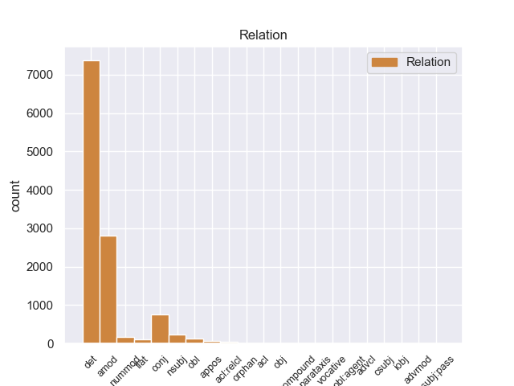
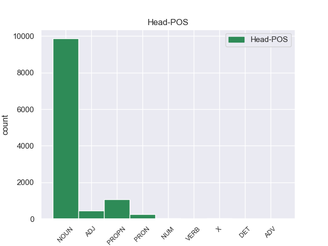
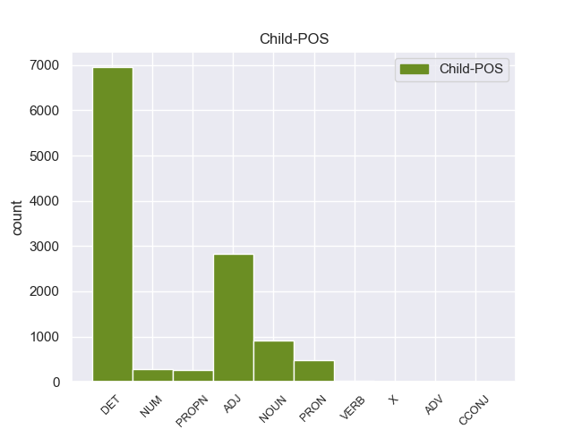

Distribution of features within this leaf



Agreement Rules sorted by frequency.
- When the dependent token is the determiner(det) of the head token, and the dependent token is DET.
1 Αυτό _ _ _ _ 0 _ _ _
2 μπορεί _ _ _ _ 0 _ _ _
3 να _ _ _ _ 0 _ _ _
4 μην _ _ _ _ 0 _ _ _
5 οδηγήσει _ _ _ _ 0 _ _ _
6 σ _ _ _ _ 0 _ _ _
7 τη _ _ _ _ 0 _ _ _
8 λήξη _ _ _ _ 0 _ _ _
9 του _ _ _ _ 0 _ _ _
10 εν _ _ _ _ 0 _ _ _
11 λόγω _ _ _ _ 0 _ _ _
12 ζητήματος _ _ _ _ 0 _ _ _
13 αλλά _ _ _ _ 0 _ _ _
14 , _ _ _ _ 0 _ _ _
15 σ _ _ _ _ 0 _ _ _
16 τη _ _ _ _ 0 _ _ _
17 μορφή _ _ _ _ 0 _ _ _
18 υπό _ _ _ _ 0 _ _ _
19 την _ _ _ _ 0 _ _ _
20 οποία _ _ _ _ 0 _ _ _
21 την _ _ _ _ 0 _ _ _
22 λάβαμε _ _ _ _ 0 _ _ _
23 , _ _ _ _ 0 _ _ _
24 αυτή _ _ _ _ 0 _ _ _
25 η _ _ _ _ 0 _ _ _
26 αίτηση _ _ _ _ 0 _ _ _
27 άρσης _ _ _ _ 0 _ _ _
28 της _ _ _ _ 0 _ _ _
29 ασυλίας _ _ _ _ 0 _ _ _
30 ήταν _ _ _ _ 0 _ _ _
31 , _ _ _ _ 0 _ _ _
32 κατά _ _ _ _ 0 _ _ _
33 την _ _ _ _ 0 _ _ _
34 άποψη _ _ _ _ 0 _ _ _
35 της _ _ _ _ 0 _ _ _
36 Επιτροπής _ _ _ _ 0 _ _ _
37 Νομικών _ _ _ _ 0 _ _ _
38 Θεμάτων _ _ _ _ 0 _ _ _
39 , _ _ _ _ 0 _ _ _
40 απαράδεκτη _ _ _ _ 0 _ _ _
41 , _ _ _ _ 0 _ _ _
42 άποψη _ _ _ _ 0 _ _ _
43 την _ _ _ _ 0 _ _ _
44 οποία _ _ _ _ 0 _ _ _
45 συνιστώ _ _ _ _ 0 _ _ _
46 σ _ _ _ _ 0 _ _ _
47 το ο DET _ Case=Acc|Gender=Neut|Number=Sing 48 det _ _
48 Σώμα σώμα NOUN _ Case=Acc|Gender=Neut|Number=Sing 0 _ _ _
49 να _ _ _ _ 0 _ _ _
50 υιοθετήσει _ _ _ _ 0 _ _ _
51 . _ _ _ _ 0 _ _ _
1 Αυτό _ _ _ _ 0 _ _ _
2 μπορεί _ _ _ _ 0 _ _ _
3 να _ _ _ _ 0 _ _ _
4 μην _ _ _ _ 0 _ _ _
5 οδηγήσει _ _ _ _ 0 _ _ _
6 σ _ _ _ _ 0 _ _ _
7 τη _ _ _ _ 0 _ _ _
8 λήξη _ _ _ _ 0 _ _ _
9 του _ _ _ _ 0 _ _ _
10 εν _ _ _ _ 0 _ _ _
11 λόγω _ _ _ _ 0 _ _ _
12 ζητήματος _ _ _ _ 0 _ _ _
13 αλλά _ _ _ _ 0 _ _ _
14 , _ _ _ _ 0 _ _ _
15 σ _ _ _ _ 0 _ _ _
16 τη _ _ _ _ 0 _ _ _
17 μορφή _ _ _ _ 0 _ _ _
18 υπό _ _ _ _ 0 _ _ _
19 την _ _ _ _ 0 _ _ _
20 οποία _ _ _ _ 0 _ _ _
21 την _ _ _ _ 0 _ _ _
22 λάβαμε _ _ _ _ 0 _ _ _
23 , _ _ _ _ 0 _ _ _
24 αυτή _ _ _ _ 0 _ _ _
25 η _ _ _ _ 0 _ _ _
26 αίτηση _ _ _ _ 0 _ _ _
27 άρσης _ _ _ _ 0 _ _ _
28 της _ _ _ _ 0 _ _ _
29 ασυλίας _ _ _ _ 0 _ _ _
30 ήταν _ _ _ _ 0 _ _ _
31 , _ _ _ _ 0 _ _ _
32 κατά _ _ _ _ 0 _ _ _
33 την _ _ _ _ 0 _ _ _
34 άποψη _ _ _ _ 0 _ _ _
35 της _ _ _ _ 0 _ _ _
36 Επιτροπής _ _ _ _ 0 _ _ _
37 Νομικών _ _ _ _ 0 _ _ _
38 Θεμάτων _ _ _ _ 0 _ _ _
39 , _ _ _ _ 0 _ _ _
40 απαράδεκτη απαράδεκτος ADJ _ Case=Nom|Gender=Fem|Number=Sing 42 amod _ _
41 , _ _ _ _ 0 _ _ _
42 άποψη άποψη NOUN _ Case=Nom|Gender=Fem|Number=Sing 0 _ _ _
43 την _ _ _ _ 0 _ _ _
44 οποία _ _ _ _ 0 _ _ _
45 συνιστώ _ _ _ _ 0 _ _ _
46 σ _ _ _ _ 0 _ _ _
47 το _ _ _ _ 0 _ _ _
48 Σώμα _ _ _ _ 0 _ _ _
49 να _ _ _ _ 0 _ _ _
50 υιοθετήσει _ _ _ _ 0 _ _ _
51 . _ _ _ _ 0 _ _ _
1 Αυτό _ _ _ _ 0 _ _ _
2 μπορεί _ _ _ _ 0 _ _ _
3 να _ _ _ _ 0 _ _ _
4 μην _ _ _ _ 0 _ _ _
5 οδηγήσει _ _ _ _ 0 _ _ _
6 σ _ _ _ _ 0 _ _ _
7 τη _ _ _ _ 0 _ _ _
8 λήξη _ _ _ _ 0 _ _ _
9 του _ _ _ _ 0 _ _ _
10 εν _ _ _ _ 0 _ _ _
11 λόγω _ _ _ _ 0 _ _ _
12 ζητήματος _ _ _ _ 0 _ _ _
13 αλλά _ _ _ _ 0 _ _ _
14 , _ _ _ _ 0 _ _ _
15 σ _ _ _ _ 0 _ _ _
16 τη _ _ _ _ 0 _ _ _
17 μορφή _ _ _ _ 0 _ _ _
18 υπό _ _ _ _ 0 _ _ _
19 την _ _ _ _ 0 _ _ _
20 οποία _ _ _ _ 0 _ _ _
21 την _ _ _ _ 0 _ _ _
22 λάβαμε _ _ _ _ 0 _ _ _
23 , _ _ _ _ 0 _ _ _
24 αυτή αυτός PRON _ Case=Nom|Gender=Fem|Number=Sing|Person=3|PronType=Dem 26 det _ _
25 η _ _ _ _ 0 _ _ _
26 αίτηση αίτηση NOUN _ Case=Nom|Gender=Fem|Number=Sing 0 _ _ _
27 άρσης _ _ _ _ 0 _ _ _
28 της _ _ _ _ 0 _ _ _
29 ασυλίας _ _ _ _ 0 _ _ _
30 ήταν _ _ _ _ 0 _ _ _
31 , _ _ _ _ 0 _ _ _
32 κατά _ _ _ _ 0 _ _ _
33 την _ _ _ _ 0 _ _ _
34 άποψη _ _ _ _ 0 _ _ _
35 της _ _ _ _ 0 _ _ _
36 Επιτροπής _ _ _ _ 0 _ _ _
37 Νομικών _ _ _ _ 0 _ _ _
38 Θεμάτων _ _ _ _ 0 _ _ _
39 , _ _ _ _ 0 _ _ _
40 απαράδεκτη _ _ _ _ 0 _ _ _
41 , _ _ _ _ 0 _ _ _
42 άποψη _ _ _ _ 0 _ _ _
43 την _ _ _ _ 0 _ _ _
44 οποία _ _ _ _ 0 _ _ _
45 συνιστώ _ _ _ _ 0 _ _ _
46 σ _ _ _ _ 0 _ _ _
47 το _ _ _ _ 0 _ _ _
48 Σώμα _ _ _ _ 0 _ _ _
49 να _ _ _ _ 0 _ _ _
50 υιοθετήσει _ _ _ _ 0 _ _ _
51 . _ _ _ _ 0 _ _ _
1 Υπάρχει _ _ _ _ 0 _ _ _
2 μια _ _ _ _ 0 _ _ _
3 κατηγορία _ _ _ _ 0 _ _ _
4 εναντίον _ _ _ _ 0 _ _ _
5 του _ _ _ _ 0 _ _ _
6 κ. _ _ _ _ 0 _ _ _
7 Pasqua _ _ _ _ 0 _ _ _
8 , _ _ _ _ 0 _ _ _
9 αλλά _ _ _ _ 0 _ _ _
10 όχι _ _ _ _ 0 _ _ _
11 εναντίον _ _ _ _ 0 _ _ _
12 του _ _ _ _ 0 _ _ _
13 κ. _ _ _ _ 0 _ _ _
14 Marchiani _ _ _ _ 0 _ _ _
15 , _ _ _ _ 0 _ _ _
16 για _ _ _ _ 0 _ _ _
17 παράνομη _ _ _ _ 0 _ _ _
18 χρηματοδότηση _ _ _ _ 0 _ _ _
19 προεκλογικής _ _ _ _ 0 _ _ _
20 εκστρατείας _ _ _ _ 0 _ _ _
21 μέσω _ _ _ _ 0 _ _ _
22 αποδοχής αποδοχή NOUN _ Case=Gen|Gender=Fem|Number=Sing 0 _ _ _
23 δωρεών _ _ _ _ 0 _ _ _
24 και _ _ _ _ 0 _ _ _
25 χρηματοδότησης χρηματοδότηση NOUN _ Case=Gen|Gender=Fem|Number=Sing 22 conj _ _
26 της _ _ _ _ 0 _ _ _
27 εκστρατείας _ _ _ _ 0 _ _ _
28 για _ _ _ _ 0 _ _ _
29 τις _ _ _ _ 0 _ _ _
30 ευρωπαϊκές _ _ _ _ 0 _ _ _
31 εκλογές _ _ _ _ 0 _ _ _
32 , _ _ _ _ 0 _ _ _
33 κατά _ _ _ _ 0 _ _ _
34 παράβαση _ _ _ _ 0 _ _ _
35 των _ _ _ _ 0 _ _ _
36 διατάξεων _ _ _ _ 0 _ _ _
37 του _ _ _ _ 0 _ _ _
38 άρθρου _ _ _ _ 0 _ _ _
39 L _ _ _ _ 0 _ _ _
40 52.8 _ _ _ _ 0 _ _ _
41 του _ _ _ _ 0 _ _ _
42 Εκλογικού _ _ _ _ 0 _ _ _
43 Κώδικα _ _ _ _ 0 _ _ _
44 . _ _ _ _ 0 _ _ _
1 Τα _ _ _ _ 0 _ _ _
2 εγκλήματα εγίθεση NOUN _ Case=Nom|Gender=Neut|Number=Plur 4 nsubj _ _
3 είναι _ _ _ _ 0 _ _ _
4 σοβαρά σοβαρός ADJ _ Case=Nom|Gender=Neut|Number=Plur 0 _ _ _
5 και _ _ _ _ 0 _ _ _
6 ανήκουν _ _ _ _ 0 _ _ _
7 σε _ _ _ _ 0 _ _ _
8 μια _ _ _ _ 0 _ _ _
9 κατηγορία _ _ _ _ 0 _ _ _
10 για _ _ _ _ 0 _ _ _
11 την _ _ _ _ 0 _ _ _
12 οποία _ _ _ _ 0 _ _ _
13 κανονικά _ _ _ _ 0 _ _ _
14 δεν _ _ _ _ 0 _ _ _
15 προσφέρεται _ _ _ _ 0 _ _ _
16 βουλευτική _ _ _ _ 0 _ _ _
17 ασυλία _ _ _ _ 0 _ _ _
18 , _ _ _ _ 0 _ _ _
19 επειδή _ _ _ _ 0 _ _ _
20 δεν _ _ _ _ 0 _ _ _
21 αφορούν _ _ _ _ 0 _ _ _
22 τις _ _ _ _ 0 _ _ _
23 συνήθεις _ _ _ _ 0 _ _ _
24 και _ _ _ _ 0 _ _ _
25 προσήκουσες _ _ _ _ 0 _ _ _
26 δραστηριότητες _ _ _ _ 0 _ _ _
27 βουλευτή _ _ _ _ 0 _ _ _
28 του _ _ _ _ 0 _ _ _
29 Σώματος _ _ _ _ 0 _ _ _
30 , _ _ _ _ 0 _ _ _
31 ή _ _ _ _ 0 _ _ _
32 πολιτικού _ _ _ _ 0 _ _ _
33 που _ _ _ _ 0 _ _ _
34 δραστηριοποιείται _ _ _ _ 0 _ _ _
35 σε _ _ _ _ 0 _ _ _
36 μια _ _ _ _ 0 _ _ _
37 δημοκρατική _ _ _ _ 0 _ _ _
38 κοινωνία _ _ _ _ 0 _ _ _
39 . _ _ _ _ 0 _ _ _
1 « _ _ _ _ 0 _ _ _
2 Δεκαεννέα δεκαεννέα NUM _ Case=Nom|Gender=Masc|Number=Plur|NumType=Card 3 nummod _ _
3 κρατούμενοι κρατούμενος NOUN _ Case=Nom|Gender=Masc|Number=Plur 0 _ _ _
4 , _ _ _ _ 0 _ _ _
5 μέλη _ _ _ _ 0 _ _ _
6 της _ _ _ _ 0 _ _ _
7 Αλ _ _ _ _ 0 _ _ _
8 Κάιντα _ _ _ _ 0 _ _ _
9 και _ _ _ _ 0 _ _ _
10 της _ _ _ _ 0 _ _ _
11 Ανσάρ _ _ _ _ 0 _ _ _
12 αλ-Σούνα _ _ _ _ 0 _ _ _
13 , _ _ _ _ 0 _ _ _
14 απέδρασαν _ _ _ _ 0 _ _ _
15 σ _ _ _ _ 0 _ _ _
16 τις _ _ _ _ 0 _ _ _
17 03:30 _ _ _ _ 0 _ _ _
18 από _ _ _ _ 0 _ _ _
19 τη _ _ _ _ 0 _ _ _
20 φυλακή _ _ _ _ 0 _ _ _
21 , _ _ _ _ 0 _ _ _
22 αφού _ _ _ _ 0 _ _ _
23 αποκοίμισαν _ _ _ _ 0 _ _ _
24 τους _ _ _ _ 0 _ _ _
25 δεσμοφύλακες _ _ _ _ 0 _ _ _
26 και _ _ _ _ 0 _ _ _
27 τους _ _ _ _ 0 _ _ _
28 υπόλοιπους _ _ _ _ 0 _ _ _
29 κρατούμενους _ _ _ _ 0 _ _ _
30 . _ _ _ _ 0 _ _ _
1 Η _ _ _ _ 0 _ _ _
2 Μπενφίκα _ _ _ _ 0 _ _ _
3 ήταν _ _ _ _ 0 _ _ _
4 πιο _ _ _ _ 0 _ _ _
5 επιθετική _ _ _ _ 0 _ _ _
6 και _ _ _ _ 0 _ _ _
7 καλύτερη _ _ _ _ 0 _ _ _
8 σ _ _ _ _ 0 _ _ _
9 το _ _ _ _ 0 _ _ _
10 πρώτο _ _ _ _ 0 _ _ _
11 ημίχρονο _ _ _ _ 0 _ _ _
12 , _ _ _ _ 0 _ _ _
13 με _ _ _ _ 0 _ _ _
14 αποτέλεσμα _ _ _ _ 0 _ _ _
15 να _ _ _ _ 0 _ _ _
16 ανοίξει _ _ _ _ 0 _ _ _
17 το _ _ _ _ 0 _ _ _
18 σκορ _ _ _ _ 0 _ _ _
19 σ _ _ _ _ 0 _ _ _
20 το _ _ _ _ 0 _ _ _
21 πρώτο _ _ _ _ 0 _ _ _
22 λεπτό _ _ _ _ 0 _ _ _
23 των _ _ _ _ 0 _ _ _
24 καθυστερήσεων _ _ _ _ 0 _ _ _
25 , _ _ _ _ 0 _ _ _
26 χάρη _ _ _ _ 0 _ _ _
27 σ _ _ _ _ 0 _ _ _
28 τον _ _ _ _ 0 _ _ _
29 Μάξι Μάξι PROPN _ Case=Acc|Gender=Masc|Number=Sing 0 _ _ _
30 Περέιρα Περέιρα PROPN _ Case=Acc|Gender=Masc|Number=Sing 29 flat _ _
31 . _ _ _ _ 0 _ _ _
1 Η _ _ _ _ 0 _ _ _
2 Μπενφίκα _ _ _ _ 0 _ _ _
3 ήταν _ _ _ _ 0 _ _ _
4 πιο _ _ _ _ 0 _ _ _
5 επιθετική επιθετικός ADJ _ Case=Nom|Gender=Fem|Number=Sing 0 _ _ _
6 και _ _ _ _ 0 _ _ _
7 καλύτερη καλύτερος ADJ _ Case=Nom|Gender=Fem|Number=Sing 5 conj _ _
8 σ _ _ _ _ 0 _ _ _
9 το _ _ _ _ 0 _ _ _
10 πρώτο _ _ _ _ 0 _ _ _
11 ημίχρονο _ _ _ _ 0 _ _ _
12 , _ _ _ _ 0 _ _ _
13 με _ _ _ _ 0 _ _ _
14 αποτέλεσμα _ _ _ _ 0 _ _ _
15 να _ _ _ _ 0 _ _ _
16 ανοίξει _ _ _ _ 0 _ _ _
17 το _ _ _ _ 0 _ _ _
18 σκορ _ _ _ _ 0 _ _ _
19 σ _ _ _ _ 0 _ _ _
20 το _ _ _ _ 0 _ _ _
21 πρώτο _ _ _ _ 0 _ _ _
22 λεπτό _ _ _ _ 0 _ _ _
23 των _ _ _ _ 0 _ _ _
24 καθυστερήσεων _ _ _ _ 0 _ _ _
25 , _ _ _ _ 0 _ _ _
26 χάρη _ _ _ _ 0 _ _ _
27 σ _ _ _ _ 0 _ _ _
28 τον _ _ _ _ 0 _ _ _
29 Μάξι _ _ _ _ 0 _ _ _
30 Περέιρα _ _ _ _ 0 _ _ _
31 . _ _ _ _ 0 _ _ _
1 Η _ _ _ _ 0 _ _ _
2 Γαλλία _ _ _ _ 0 _ _ _
3 δήλωσε _ _ _ _ 0 _ _ _
4 ότι _ _ _ _ 0 _ _ _
5 « _ _ _ _ 0 _ _ _
6 ο _ _ _ _ 0 _ _ _
7 αλ _ _ _ _ 0 _ _ _
8 Σενούσι _ _ _ _ 0 _ _ _
9 έχει _ _ _ _ 0 _ _ _
10 συλληφθεί _ _ _ _ 0 _ _ _
11 μετά _ _ _ _ 0 _ _ _
12 από _ _ _ _ 0 _ _ _
13 συνεργασία _ _ _ _ 0 _ _ _
14 Γάλλων Γάλλός PROPN _ Case=Gen|Gender=Masc|Number=Plur 0 _ _ _
15 και _ _ _ _ 0 _ _ _
16 Μαυριτανών μαυριτανός PROPN _ Case=Gen|Gender=Masc|Number=Plur 14 conj _ _
17 πρακτόρων _ _ _ _ 0 _ _ _
18 . _ _ _ _ 0 _ _ _
1 Κύριε _ _ _ _ 0 _ _ _
2 Πρόεδρε _ _ _ _ 0 _ _ _
3 , _ _ _ _ 0 _ _ _
4 οι _ _ _ _ 0 _ _ _
5 υπό _ _ _ _ 0 _ _ _
6 συζήτηση _ _ _ _ 0 _ _ _
7 υποθέσεις _ _ _ _ 0 _ _ _
8 αφορούν _ _ _ _ 0 _ _ _
9 πολύ _ _ _ _ 0 _ _ _
10 σοβαρές _ _ _ _ 0 _ _ _
11 κατηγορίες _ _ _ _ 0 _ _ _
12 , _ _ _ _ 0 _ _ _
13 οι _ _ _ _ 0 _ _ _
14 οποίες _ _ _ _ 0 _ _ _
15 βαρύνουν _ _ _ _ 0 _ _ _
16 δύο _ _ _ _ 0 _ _ _
17 βουλευτές _ _ _ _ 0 _ _ _
18 του _ _ _ _ 0 _ _ _
19 Σώματος _ _ _ _ 0 _ _ _
20 και _ _ _ _ 0 _ _ _
21 αναφέρονται _ _ _ _ 0 _ _ _
22 σ _ _ _ _ 0 _ _ _
23 την _ _ _ _ 0 _ _ _
24 πρώτη πρώτος NUM _ Case=Acc|Gender=Fem|Number=Sing|NumType=Ord 25 amod _ _
25 σελίδα σελίδα NOUN _ Case=Acc|Gender=Fem|Number=Sing 0 _ _ _
26 της _ _ _ _ 0 _ _ _
27 αιτιολογικής _ _ _ _ 0 _ _ _
28 έκθεσης _ _ _ _ 0 _ _ _
29 της _ _ _ _ 0 _ _ _
30 έκθεσής _ _ _ _ 0 _ _ _
31 μου _ _ _ _ 0 _ _ _
32 , _ _ _ _ 0 _ _ _
33 σ _ _ _ _ 0 _ _ _
34 την _ _ _ _ 0 _ _ _
35 οποία _ _ _ _ 0 _ _ _
36 συνιστώ _ _ _ _ 0 _ _ _
37 σ _ _ _ _ 0 _ _ _
38 τους _ _ _ _ 0 _ _ _
39 συναδέλφους _ _ _ _ 0 _ _ _
40 να _ _ _ _ 0 _ _ _
41 ρίξουν _ _ _ _ 0 _ _ _
42 μια _ _ _ _ 0 _ _ _
43 ματιά _ _ _ _ 0 _ _ _
44 . _ _ _ _ 0 _ _ _
1 Αυτό _ _ _ _ 0 _ _ _
2 μπορεί _ _ _ _ 0 _ _ _
3 να _ _ _ _ 0 _ _ _
4 μην _ _ _ _ 0 _ _ _
5 οδηγήσει _ _ _ _ 0 _ _ _
6 σ _ _ _ _ 0 _ _ _
7 τη _ _ _ _ 0 _ _ _
8 λήξη _ _ _ _ 0 _ _ _
9 του _ _ _ _ 0 _ _ _
10 εν _ _ _ _ 0 _ _ _
11 λόγω _ _ _ _ 0 _ _ _
12 ζητήματος _ _ _ _ 0 _ _ _
13 αλλά _ _ _ _ 0 _ _ _
14 , _ _ _ _ 0 _ _ _
15 σ _ _ _ _ 0 _ _ _
16 τη _ _ _ _ 0 _ _ _
17 μορφή _ _ _ _ 0 _ _ _
18 υπό _ _ _ _ 0 _ _ _
19 την _ _ _ _ 0 _ _ _
20 οποία _ _ _ _ 0 _ _ _
21 την _ _ _ _ 0 _ _ _
22 λάβαμε _ _ _ _ 0 _ _ _
23 , _ _ _ _ 0 _ _ _
24 αυτή _ _ _ _ 0 _ _ _
25 η _ _ _ _ 0 _ _ _
26 αίτηση _ _ _ _ 0 _ _ _
27 άρσης _ _ _ _ 0 _ _ _
28 της _ _ _ _ 0 _ _ _
29 ασυλίας _ _ _ _ 0 _ _ _
30 ήταν _ _ _ _ 0 _ _ _
31 , _ _ _ _ 0 _ _ _
32 κατά _ _ _ _ 0 _ _ _
33 την _ _ _ _ 0 _ _ _
34 άποψη άποψη NOUN _ Case=Acc|Gender=Fem|Number=Sing 40 obl _ _
35 της _ _ _ _ 0 _ _ _
36 Επιτροπής _ _ _ _ 0 _ _ _
37 Νομικών _ _ _ _ 0 _ _ _
38 Θεμάτων _ _ _ _ 0 _ _ _
39 , _ _ _ _ 0 _ _ _
40 απαράδεκτη απαράδεκτος ADJ _ Case=Nom|Gender=Fem|Number=Sing 0 _ _ _
41 , _ _ _ _ 0 _ _ _
42 άποψη _ _ _ _ 0 _ _ _
43 την _ _ _ _ 0 _ _ _
44 οποία _ _ _ _ 0 _ _ _
45 συνιστώ _ _ _ _ 0 _ _ _
46 σ _ _ _ _ 0 _ _ _
47 το _ _ _ _ 0 _ _ _
48 Σώμα _ _ _ _ 0 _ _ _
49 να _ _ _ _ 0 _ _ _
50 υιοθετήσει _ _ _ _ 0 _ _ _
51 . _ _ _ _ 0 _ _ _
1 Ο _ _ _ _ 0 _ _ _
2 λόγος _ _ _ _ 0 _ _ _
3 γίνεται _ _ _ _ 0 _ _ _
4 για _ _ _ _ 0 _ _ _
5 τον _ _ _ _ 0 _ _ _
6 Χάουμε _ _ _ _ 0 _ _ _
7 Μάτας _ _ _ _ 0 _ _ _
8 , _ _ _ _ 0 _ _ _
9 ο _ _ _ _ 0 _ _ _
10 οποίος οποίος PRON _ Case=Nom|Gender=Masc|Number=Sing|Person=3|PronType=Rel 12 nsubj _ _
11 ήταν _ _ _ _ 0 _ _ _
12 Υπουργός υπουργός NOUN _ Case=Nom|Gender=Masc|Number=Sing 0 _ _ _
13 Περιβάλλοντος _ _ _ _ 0 _ _ _
14 τα _ _ _ _ 0 _ _ _
15 έτη _ _ _ _ 0 _ _ _
16 2000-2003 _ _ _ _ 0 _ _ _
17 και _ _ _ _ 0 _ _ _
18 Περιφερειακός _ _ _ _ 0 _ _ _
19 Πρωθυπουργός _ _ _ _ 0 _ _ _
20 των _ _ _ _ 0 _ _ _
21 Βαλεαρίδων _ _ _ _ 0 _ _ _
22 Νήσων _ _ _ _ 0 _ _ _
23 κατά _ _ _ _ 0 _ _ _
24 την _ _ _ _ 0 _ _ _
25 περίοδο _ _ _ _ 0 _ _ _
26 2003-2007 _ _ _ _ 0 _ _ _
27 . _ _ _ _ 0 _ _ _
1 O _ _ _ _ 0 _ _ _
2 Πρόεδρος πρόεδρος NOUN _ Case=Nom|Gender=Masc|Number=Sing 0 _ _ _
3 των _ _ _ _ 0 _ _ _
4 ΗΠΑ _ _ _ _ 0 _ _ _
5 , _ _ _ _ 0 _ _ _
6 Μπαράκ Μπαράκ PROPN _ Case=Nom|Gender=Masc|Number=Sing 2 appos _ _
7 Ομπάμα _ _ _ _ 0 _ _ _
8 , _ _ _ _ 0 _ _ _
9 επανέλαβε _ _ _ _ 0 _ _ _
10 την _ _ _ _ 0 _ _ _
11 δέσμευσή _ _ _ _ 0 _ _ _
12 του _ _ _ _ 0 _ _ _
13 ότι _ _ _ _ 0 _ _ _
14 θα _ _ _ _ 0 _ _ _
15 εξεταστούν _ _ _ _ 0 _ _ _
16 όλες _ _ _ _ 0 _ _ _
17 οι _ _ _ _ 0 _ _ _
18 εναλλακτικές _ _ _ _ 0 _ _ _
19 λύσεις _ _ _ _ 0 _ _ _
20 , _ _ _ _ 0 _ _ _
21 συμπεριλαμβανομένης _ _ _ _ 0 _ _ _
22 και _ _ _ _ 0 _ _ _
23 της _ _ _ _ 0 _ _ _
24 στρατιωτικής _ _ _ _ 0 _ _ _
25 αναμέτρησης _ _ _ _ 0 _ _ _
26 , _ _ _ _ 0 _ _ _
27 για _ _ _ _ 0 _ _ _
28 να _ _ _ _ 0 _ _ _
29 μην _ _ _ _ 0 _ _ _
30 αποκτήσει _ _ _ _ 0 _ _ _
31 το _ _ _ _ 0 _ _ _
32 Ιράν _ _ _ _ 0 _ _ _
33 πυρηνικά _ _ _ _ 0 _ _ _
34 όπλα _ _ _ _ 0 _ _ _
35 . _ _ _ _ 0 _ _ _
1 Η _ _ _ _ 0 _ _ _
2 Ρωσία _ _ _ _ 0 _ _ _
3 υπέδειξε _ _ _ _ 0 _ _ _
4 τον _ _ _ _ 0 _ _ _
5 γιό _ _ _ _ 0 _ _ _
6 του _ _ _ _ 0 _ _ _
7 βασιλιά βασιλιάς NOUN _ Case=Acc|Gender=Masc|Number=Sing 0 _ _ _
8 των _ _ _ _ 0 _ _ _
9 Ελλήνων _ _ _ _ 0 _ _ _
10 Γεωργίου _ _ _ _ 0 _ _ _
11 του _ _ _ _ 0 _ _ _
12 Α' _ _ _ _ 0 _ _ _
13 , _ _ _ _ 0 _ _ _
14 τον _ _ _ _ 0 _ _ _
15 πρίγκιπα πρίγκιπας NOUN _ Case=Acc|Gender=Masc|Number=Sing 7 appos _ _
16 Γεώργιο _ _ _ _ 0 _ _ _
17 , _ _ _ _ 0 _ _ _
18 ο _ _ _ _ 0 _ _ _
19 οποίος _ _ _ _ 0 _ _ _
20 και _ _ _ _ 0 _ _ _
21 επελέγη _ _ _ _ 0 _ _ _
22 τελικά _ _ _ _ 0 _ _ _
23 . _ _ _ _ 0 _ _ _
1 Παρόμοιο _ _ _ _ 0 _ _ _
2 καθεστώς _ _ _ _ 0 _ _ _
3 επιδιώκουν _ _ _ _ 0 _ _ _
4 και _ _ _ _ 0 _ _ _
5 οι _ _ _ _ 0 _ _ _
6 πόλεις πόλεα NOUN _ Case=Nom|Gender=Fem|Number=Plur 0 _ _ _
7 σ _ _ _ _ 0 _ _ _
8 τα _ _ _ _ 0 _ _ _
9 ανατολικά _ _ _ _ 0 _ _ _
10 της _ _ _ _ 0 _ _ _
11 Λιβύης _ _ _ _ 0 _ _ _
12 , _ _ _ _ 0 _ _ _
13 οι _ _ _ _ 0 _ _ _
14 οποίες _ _ _ _ 0 _ _ _
15 είναι _ _ _ _ 0 _ _ _
16 πλούσιες πλούσιος ADJ _ Case=Nom|Gender=Fem|Number=Plur 6 acl:relcl _ _
17 σε _ _ _ _ 0 _ _ _
18 κοιτάσματα _ _ _ _ 0 _ _ _
19 πετρελαίου _ _ _ _ 0 _ _ _
20 . _ _ _ _ 0 _ _ _
1 O _ _ _ _ 0 _ _ _
2 Πρόεδρος _ _ _ _ 0 _ _ _
3 των _ _ _ _ 0 _ _ _
4 ΗΠΑ _ _ _ _ 0 _ _ _
5 , _ _ _ _ 0 _ _ _
6 Μπαράκ _ _ _ _ 0 _ _ _
7 Ομπάμα _ _ _ _ 0 _ _ _
8 , _ _ _ _ 0 _ _ _
9 επανέλαβε _ _ _ _ 0 _ _ _
10 την _ _ _ _ 0 _ _ _
11 δέσμευσή _ _ _ _ 0 _ _ _
12 του _ _ _ _ 0 _ _ _
13 ότι _ _ _ _ 0 _ _ _
14 θα _ _ _ _ 0 _ _ _
15 εξεταστούν _ _ _ _ 0 _ _ _
16 όλες _ _ _ _ 0 _ _ _
17 οι _ _ _ _ 0 _ _ _
18 εναλλακτικές _ _ _ _ 0 _ _ _
19 λύσεις _ _ _ _ 0 _ _ _
20 , _ _ _ _ 0 _ _ _
21 συμπεριλαμβανομένης συμπεριλαμβανόμενος VERB _ Case=Gen|Gender=Fem|Number=Sing 25 amod _ _
22 και _ _ _ _ 0 _ _ _
23 της _ _ _ _ 0 _ _ _
24 στρατιωτικής _ _ _ _ 0 _ _ _
25 αναμέτρησης αναμέτρηση NOUN _ Case=Gen|Gender=Fem|Number=Sing 0 _ _ _
26 , _ _ _ _ 0 _ _ _
27 για _ _ _ _ 0 _ _ _
28 να _ _ _ _ 0 _ _ _
29 μην _ _ _ _ 0 _ _ _
30 αποκτήσει _ _ _ _ 0 _ _ _
31 το _ _ _ _ 0 _ _ _
32 Ιράν _ _ _ _ 0 _ _ _
33 πυρηνικά _ _ _ _ 0 _ _ _
34 όπλα _ _ _ _ 0 _ _ _
35 . _ _ _ _ 0 _ _ _
1 Πάντως _ _ _ _ 0 _ _ _
2 ο _ _ _ _ 0 _ _ _
3 Αμερικανός Αμερικανός PROPN _ Case=Nom|Gender=Masc|Number=Sing 4 amod _ _
4 Πρόεδρος πρόεδρος NOUN _ Case=Nom|Gender=Masc|Number=Sing 0 _ _ _
5 δήλωσε _ _ _ _ 0 _ _ _
6 σ _ _ _ _ 0 _ _ _
7 την _ _ _ _ 0 _ _ _
8 Ισραηλοαμερικανική _ _ _ _ 0 _ _ _
9 Επιτροπή _ _ _ _ 0 _ _ _
10 Δημοσίων _ _ _ _ 0 _ _ _
11 Σχέσεων _ _ _ _ 0 _ _ _
12 ( _ _ _ _ 0 _ _ _
13 AIPAC _ _ _ _ 0 _ _ _
14 ) _ _ _ _ 0 _ _ _
15 σ _ _ _ _ 0 _ _ _
16 την _ _ _ _ 0 _ _ _
17 Ουάσιγκτον _ _ _ _ 0 _ _ _
18 την _ _ _ _ 0 _ _ _
19 Κυριακή _ _ _ _ 0 _ _ _
20 , _ _ _ _ 0 _ _ _
21 ότι _ _ _ _ 0 _ _ _
22 « _ _ _ _ 0 _ _ _
23 προτιμά _ _ _ _ 0 _ _ _
24 το _ _ _ _ 0 _ _ _
25 θέμα _ _ _ _ 0 _ _ _
26 να _ _ _ _ 0 _ _ _
27 επιλυθεί _ _ _ _ 0 _ _ _
28 μέσω _ _ _ _ 0 _ _ _
29 της _ _ _ _ 0 _ _ _
30 διπλωματίας _ _ _ _ 0 _ _ _
31 » _ _ _ _ 0 _ _ _
32 . _ _ _ _ 0 _ _ _
1 Για _ _ _ _ 0 _ _ _
2 τον _ _ _ _ 0 _ _ _
3 λόγο _ _ _ _ 0 _ _ _
4 αυτό _ _ _ _ 0 _ _ _
5 , _ _ _ _ 0 _ _ _
6 κύριε κύριος NOUN _ Case=Voc|Gender=Masc|Number=Sing 7 vocative _ _
7 Ύπατε ύπατος NOUN _ Case=Voc|Gender=Masc|Number=Sing 0 _ _ _
8 Εκπρόσωπε _ _ _ _ 0 _ _ _
9 , _ _ _ _ 0 _ _ _
10 να _ _ _ _ 0 _ _ _
11 σκεφτούμε _ _ _ _ 0 _ _ _
12 και _ _ _ _ 0 _ _ _
13 μαζί _ _ _ _ 0 _ _ _
14 με _ _ _ _ 0 _ _ _
15 μας _ _ _ _ 0 _ _ _
16 θα _ _ _ _ 0 _ _ _
17 πρέπει _ _ _ _ 0 _ _ _
18 να _ _ _ _ 0 _ _ _
19 σκεφτεί _ _ _ _ 0 _ _ _
20 και _ _ _ _ 0 _ _ _
21 η _ _ _ _ 0 _ _ _
22 Επιτροπή _ _ _ _ 0 _ _ _
23 κατά _ _ _ _ 0 _ _ _
24 πόσο _ _ _ _ 0 _ _ _
25 μπορούμε _ _ _ _ 0 _ _ _
26 να _ _ _ _ 0 _ _ _
27 χρησιμοποιήσουμε _ _ _ _ 0 _ _ _
28 τα _ _ _ _ 0 _ _ _
29 μέσα _ _ _ _ 0 _ _ _
30 που _ _ _ _ 0 _ _ _
31 διαθέτουμε _ _ _ _ 0 _ _ _
32 μέσω _ _ _ _ 0 _ _ _
33 της _ _ _ _ 0 _ _ _
34 συμφωνίας _ _ _ _ 0 _ _ _
35 σύνδεσης _ _ _ _ 0 _ _ _
36 με _ _ _ _ 0 _ _ _
37 το _ _ _ _ 0 _ _ _
38 Ισραήλ _ _ _ _ 0 _ _ _
39 , _ _ _ _ 0 _ _ _
40 φτάνοντας _ _ _ _ 0 _ _ _
41 ακόμα _ _ _ _ 0 _ _ _
42 και _ _ _ _ 0 _ _ _
43 σ _ _ _ _ 0 _ _ _
44 την _ _ _ _ 0 _ _ _
45 αναστολή _ _ _ _ 0 _ _ _
46 της _ _ _ _ 0 _ _ _
47 εν _ _ _ _ 0 _ _ _
48 λόγω _ _ _ _ 0 _ _ _
49 συμφωνίας _ _ _ _ 0 _ _ _
50 . _ _ _ _ 0 _ _ _
1 Τέλος _ _ _ _ 0 _ _ _
2 , _ _ _ _ 0 _ _ _
3 σχετικά _ _ _ _ 0 _ _ _
4 με _ _ _ _ 0 _ _ _
5 τα _ _ _ _ 0 _ _ _
6 δύο _ _ _ _ 0 _ _ _
7 θέματα _ _ _ _ 0 _ _ _
8 που _ _ _ _ 0 _ _ _
9 δεν _ _ _ _ 0 _ _ _
10 αφορούν _ _ _ _ 0 _ _ _
11 τον _ _ _ _ 0 _ _ _
12 ανταγωνισμό _ _ _ _ 0 _ _ _
13 , _ _ _ _ 0 _ _ _
14 αλλά _ _ _ _ 0 _ _ _
15 έχουν _ _ _ _ 0 _ _ _
16 κάποια κάποιος ADJ _ Case=Acc|Gender=Fem|Number=Sing|Person=3|PronType=Ind 17 det _ _
17 σχέση σχέση NOUN _ Case=Acc|Gender=Fem|Number=Sing 0 _ _ _
18 με _ _ _ _ 0 _ _ _
19 τις _ _ _ _ 0 _ _ _
20 τιμές _ _ _ _ 0 _ _ _
21 , _ _ _ _ 0 _ _ _
22 τη _ _ _ _ 0 _ _ _
23 φορολογία _ _ _ _ 0 _ _ _
24 και _ _ _ _ 0 _ _ _
25 το _ _ _ _ 0 _ _ _
26 ευρώ _ _ _ _ 0 _ _ _
27 , _ _ _ _ 0 _ _ _
28 δεν _ _ _ _ 0 _ _ _
29 θα _ _ _ _ 0 _ _ _
30 επεκταθώ _ _ _ _ 0 _ _ _
31 πέραν _ _ _ _ 0 _ _ _
32 της _ _ _ _ 0 _ _ _
33 απάντησης _ _ _ _ 0 _ _ _
34 που _ _ _ _ 0 _ _ _
35 έδωσα _ _ _ _ 0 _ _ _
36 σχετικά _ _ _ _ 0 _ _ _
37 με _ _ _ _ 0 _ _ _
38 το _ _ _ _ 0 _ _ _
39 ζήτημα _ _ _ _ 0 _ _ _
40 του _ _ _ _ 0 _ _ _
41 ΗΒ _ _ _ _ 0 _ _ _
42 , _ _ _ _ 0 _ _ _
43 τα _ _ _ _ 0 _ _ _
44 αυτοκίνητα _ _ _ _ 0 _ _ _
45 και _ _ _ _ 0 _ _ _
46 το _ _ _ _ 0 _ _ _
47 ευρώ _ _ _ _ 0 _ _ _
48 . _ _ _ _ 0 _ _ _
1 Ο _ _ _ _ 0 _ _ _
2 Μπαράκ Μπαράκ X _ Case=Nom|Gender=Masc|Number=Sing 0 _ _ _
3 Ομπάμα Ομπάμα X _ Case=Nom|Gender=Masc|Number=Sing 2 flat _ _
4 ανέφερε _ _ _ _ 0 _ _ _
5 ότι _ _ _ _ 0 _ _ _
6 « _ _ _ _ 0 _ _ _
7 ήδη _ _ _ _ 0 _ _ _
8 υπάρχουν _ _ _ _ 0 _ _ _
9 πολλές _ _ _ _ 0 _ _ _
10 αναφορές _ _ _ _ 0 _ _ _
11 για _ _ _ _ 0 _ _ _
12 πόλεμο _ _ _ _ 0 _ _ _
13 με _ _ _ _ 0 _ _ _
14 το _ _ _ _ 0 _ _ _
15 Ιράν _ _ _ _ 0 _ _ _
16 » _ _ _ _ 0 _ _ _
17 και _ _ _ _ 0 _ _ _
18 επεσήμανε _ _ _ _ 0 _ _ _
19 τέτοιες _ _ _ _ 0 _ _ _
20 συζητήσεις _ _ _ _ 0 _ _ _
21 « _ _ _ _ 0 _ _ _
22 είναι _ _ _ _ 0 _ _ _
23 προς _ _ _ _ 0 _ _ _
24 όφελος _ _ _ _ 0 _ _ _
25 της _ _ _ _ 0 _ _ _
26 Τεχεράνης _ _ _ _ 0 _ _ _
27 γιατί _ _ _ _ 0 _ _ _
28 αυξάνουν _ _ _ _ 0 _ _ _
29 τις _ _ _ _ 0 _ _ _
30 τιμές _ _ _ _ 0 _ _ _
31 του _ _ _ _ 0 _ _ _
32 πετρελαίου _ _ _ _ 0 _ _ _
33 , _ _ _ _ 0 _ _ _
34 σ _ _ _ _ 0 _ _ _
35 το _ _ _ _ 0 _ _ _
36 οποίο _ _ _ _ 0 _ _ _
37 βασίζεται _ _ _ _ 0 _ _ _
38 η _ _ _ _ 0 _ _ _
39 Ιρανική _ _ _ _ 0 _ _ _
40 Κυβέρνηση _ _ _ _ 0 _ _ _
41 για _ _ _ _ 0 _ _ _
42 την _ _ _ _ 0 _ _ _
43 χρηματοδότηση _ _ _ _ 0 _ _ _
44 του _ _ _ _ 0 _ _ _
45 πυρηνικού _ _ _ _ 0 _ _ _
46 της _ _ _ _ 0 _ _ _
47 προγράμματος _ _ _ _ 0 _ _ _
48 » _ _ _ _ 0 _ _ _
49 . _ _ _ _ 0 _ _ _
1 Περισσότεροι περισσότεροι ADV _ Case=Nom|Gender=Masc|Number=Plur 4 amod _ _
2 από _ _ _ _ 0 _ _ _
3 15.000 _ _ _ _ 0 _ _ _
4 τόνοι τόνος NOUN _ Case=Nom|Gender=Masc|Number=Plur 0 _ _ _
5 πατάτας _ _ _ _ 0 _ _ _
6 διατέθηκαν _ _ _ _ 0 _ _ _
7 σ _ _ _ _ 0 _ _ _
8 την _ _ _ _ 0 _ _ _
9 αγορά _ _ _ _ 0 _ _ _
10 μόνο _ _ _ _ 0 _ _ _
11 από _ _ _ _ 0 _ _ _
12 το _ _ _ _ 0 _ _ _
13 λεκανοπέδιο _ _ _ _ 0 _ _ _
14 του _ _ _ _ 0 _ _ _
15 Νευροκοπίου _ _ _ _ 0 _ _ _
16 , _ _ _ _ 0 _ _ _
17 σύμφωνα _ _ _ _ 0 _ _ _
18 με _ _ _ _ 0 _ _ _
19 υπολογισμούς _ _ _ _ 0 _ _ _
20 από _ _ _ _ 0 _ _ _
21 τη _ _ _ _ 0 _ _ _
22 στιγμή _ _ _ _ 0 _ _ _
23 που _ _ _ _ 0 _ _ _
24 ξεκίνησε _ _ _ _ 0 _ _ _
25 το _ _ _ _ 0 _ _ _
26 « _ _ _ _ 0 _ _ _
27 κίνημα _ _ _ _ 0 _ _ _
28 της _ _ _ _ 0 _ _ _
29 πατάτας _ _ _ _ 0 _ _ _
30 » _ _ _ _ 0 _ _ _
31 - _ _ _ _ 0 _ _ _
32 πριν _ _ _ _ 0 _ _ _
33 από _ _ _ _ 0 _ _ _
34 έναν _ _ _ _ 0 _ _ _
35 μήνα _ _ _ _ 0 _ _ _
36 περίπου _ _ _ _ 0 _ _ _
37 - _ _ _ _ 0 _ _ _
38 μέχρι _ _ _ _ 0 _ _ _
39 σήμερα _ _ _ _ 0 _ _ _
40 . _ _ _ _ 0 _ _ _
1 Η _ _ _ _ 0 _ _ _
2 πρώτη _ _ _ _ 0 _ _ _
3 ειδοποίηση _ _ _ _ 0 _ _ _
4 θα _ _ _ _ 0 _ _ _
5 γίνεται _ _ _ _ 0 _ _ _
6 με _ _ _ _ 0 _ _ _
7 την _ _ _ _ 0 _ _ _
8 παρέλευση _ _ _ _ 0 _ _ _
9 πέντε _ _ _ _ 0 _ _ _
10 χρόνων _ _ _ _ 0 _ _ _
11 από _ _ _ _ 0 _ _ _
12 την _ _ _ _ 0 _ _ _
13 ημερομηνία _ _ _ _ 0 _ _ _
14 που _ _ _ _ 0 _ _ _
15 ανοίχθηκε _ _ _ _ 0 _ _ _
16 ο _ _ _ _ 0 _ _ _
17 λογαριασμός _ _ _ _ 0 _ _ _
18 , _ _ _ _ 0 _ _ _
19 η _ _ _ _ 0 _ _ _
20 δεύτερη _ _ _ _ 0 _ _ _
21 σ _ _ _ _ 0 _ _ _
22 την _ _ _ _ 0 _ _ _
23 10ετία 10ετία NOUN _ Case=Acc|Gender=Fem|Number=Sing 0 _ _ _
24 και _ _ _ _ 0 _ _ _
25 η _ _ _ _ 0 _ _ _
26 τρίτη _ _ _ _ 0 _ _ _
27 σ _ _ _ _ 0 _ _ _
28 την _ _ _ _ 0 _ _ _
29 15ετία 15ετία NUM _ Case=Acc|Gender=Fem|Number=Sing 23 conj _ _
30 . _ _ _ _ 0 _ _ _
1 Μια _ _ _ _ 0 _ _ _
2 υπεραγορά _ _ _ _ 0 _ _ _
3 θα _ _ _ _ 0 _ _ _
4 μπορούσε _ _ _ _ 0 _ _ _
5 να _ _ _ _ 0 _ _ _
6 διαθέτει _ _ _ _ 0 _ _ _
7 προς _ _ _ _ 0 _ _ _
8 πώληση _ _ _ _ 0 _ _ _
9 μία ένας NUM _ Case=Acc|Gender=Fem|Number=Sing|NumType=Card 12 det _ _
10 ή _ _ _ _ 0 _ _ _
11 πολλές _ _ _ _ 0 _ _ _
12 μάρκες μάρκα NOUN _ Case=Acc|Gender=Fem|Number=Plur 0 _ _ _
13 αν _ _ _ _ 0 _ _ _
14 πληροί _ _ _ _ 0 _ _ _
15 τα _ _ _ _ 0 _ _ _
16 κριτήρια _ _ _ _ 0 _ _ _
17 που _ _ _ _ 0 _ _ _
18 καθορίζει _ _ _ _ 0 _ _ _
19 ο _ _ _ _ 0 _ _ _
20 κατασκευαστής _ _ _ _ 0 _ _ _
21 . _ _ _ _ 0 _ _ _
1 Προβλέπεται _ _ _ _ 0 _ _ _
2 επίσης _ _ _ _ 0 _ _ _
3 οι _ _ _ _ 0 _ _ _
4 τράπεζες _ _ _ _ 0 _ _ _
5 να _ _ _ _ 0 _ _ _
6 ειδοποιούν _ _ _ _ 0 _ _ _
7 τρεις _ _ _ _ 0 _ _ _
8 φορές _ _ _ _ 0 _ _ _
9 τους _ _ _ _ 0 _ _ _
10 καταθέτες _ _ _ _ 0 _ _ _
11 των _ _ _ _ 0 _ _ _
12 λογαριασμών _ _ _ _ 0 _ _ _
13 αυτών _ _ _ _ 0 _ _ _
14 εφόσον _ _ _ _ 0 _ _ _
15 το _ _ _ _ 0 _ _ _
16 υπόλοιπό υπόλοιπό ADJ _ Case=Nom|Gender=Neut|Number=Sing 19 nsubj _ _
17 τους _ _ _ _ 0 _ _ _
18 είναι _ _ _ _ 0 _ _ _
19 μεγαλύτερο μεγάλος ADJ _ Case=Nom|Gender=Neut|Number=Sing 0 _ _ _
20 των _ _ _ _ 0 _ _ _
21 100 _ _ _ _ 0 _ _ _
22 ευρώ _ _ _ _ 0 _ _ _
23 . _ _ _ _ 0 _ _ _
1 Εκείνη _ _ _ _ 0 _ _ _
2 την _ _ _ _ 0 _ _ _
3 περίοδο _ _ _ _ 0 _ _ _
4 άρχισε _ _ _ _ 0 _ _ _
5 να _ _ _ _ 0 _ _ _
6 γίνεται _ _ _ _ 0 _ _ _
7 αντικατάσταση αντικατάσταση NOUN _ Case=Nom|Gender=Fem|Number=Sing 0 _ _ _
8 της _ _ _ _ 0 _ _ _
9 ιδέας _ _ _ _ 0 _ _ _
10 της _ _ _ _ 0 _ _ _
11 ενιαίας _ _ _ _ 0 _ _ _
12 Μακεδονίας _ _ _ _ 0 _ _ _
13 με _ _ _ _ 0 _ _ _
14 αυτή αυτός PRON _ Case=Acc|Gender=Fem|Number=Sing|Person=3|PronType=Dem 7 conj _ _
15 της _ _ _ _ 0 _ _ _
16 λύτρωσης _ _ _ _ 0 _ _ _
17 των _ _ _ _ 0 _ _ _
18 λεγόμενων _ _ _ _ 0 _ _ _
19 Σλαβομακεδόνων _ _ _ _ 0 _ _ _
20 . _ _ _ _ 0 _ _ _
1 Αν _ _ _ _ 0 _ _ _
2 το _ _ _ _ 0 _ _ _
3 ζήτημα ζήτημα NOUN _ Case=Nom|Gender=Neut|Number=Sing 0 _ _ _
4 της _ _ _ _ 0 _ _ _
5 εθνικής _ _ _ _ 0 _ _ _
6 κυριαρχίας _ _ _ _ 0 _ _ _
7 του _ _ _ _ 0 _ _ _
8 Θιβέτ _ _ _ _ 0 _ _ _
9 είναι _ _ _ _ 0 _ _ _
10 ζοφερό ζοφερός ADJ _ Case=Nom|Gender=Neut|Number=Sing 3 acl _ _
11 , _ _ _ _ 0 _ _ _
12 οι _ _ _ _ 0 _ _ _
13 απορίες _ _ _ _ 0 _ _ _
14 για _ _ _ _ 0 _ _ _
15 την _ _ _ _ 0 _ _ _
16 αντιμετώπιση _ _ _ _ 0 _ _ _
17 των _ _ _ _ 0 _ _ _
18 Θιβετιανών _ _ _ _ 0 _ _ _
19 είναι _ _ _ _ 0 _ _ _
20 ξεκάθαρες _ _ _ _ 0 _ _ _
21 . _ _ _ _ 0 _ _ _
1 Θα _ _ _ _ 0 _ _ _
2 ήθελα _ _ _ _ 0 _ _ _
3 να _ _ _ _ 0 _ _ _
4 επιστήσω _ _ _ _ 0 _ _ _
5 την _ _ _ _ 0 _ _ _
6 προσοχή _ _ _ _ 0 _ _ _
7 όλων _ _ _ _ 0 _ _ _
8 των _ _ _ _ 0 _ _ _
9 συναδέλφων _ _ _ _ 0 _ _ _
10 σ _ _ _ _ 0 _ _ _
11 το _ _ _ _ 0 _ _ _
12 γεγονός _ _ _ _ 0 _ _ _
13 ότι _ _ _ _ 0 _ _ _
14 , _ _ _ _ 0 _ _ _
15 εάν _ _ _ _ 0 _ _ _
16 υπάρχουν _ _ _ _ 0 _ _ _
17 κάποιες _ _ _ _ 0 _ _ _
18 ελευθερίες ελευθερία NOUN NOUN Case=Nom|Gender=Fem|Number=Plur 0 _ _ _
19 οι _ _ _ _ 0 _ _ _
20 οποίες _ _ _ _ 0 _ _ _
21 είναι _ _ _ _ 0 _ _ _
22 ζωτικής _ _ _ _ 0 _ _ _
23 σημασίας σημασία NOUN NOUN Case=Gen|Gender=Fem|Number=Sing 18 acl:relcl _ _
24 για _ _ _ _ 0 _ _ _
25 την _ _ _ _ 0 _ _ _
26 άσκηση _ _ _ _ 0 _ _ _
27 του _ _ _ _ 0 _ _ _
28 λειτουργήματος _ _ _ _ 0 _ _ _
29 της _ _ _ _ 0 _ _ _
30 δημόσιας _ _ _ _ 0 _ _ _
31 εκπροσώπησης _ _ _ _ 0 _ _ _
32 , _ _ _ _ 0 _ _ _
33 ιδίως _ _ _ _ 0 _ _ _
34 για _ _ _ _ 0 _ _ _
35 ένα _ _ _ _ 0 _ _ _
36 Κοινοβούλιο _ _ _ _ 0 _ _ _
37 σαν _ _ _ _ 0 _ _ _
38 το _ _ _ _ 0 _ _ _
39 δικό _ _ _ _ 0 _ _ _
40 μας _ _ _ _ 0 _ _ _
41 , _ _ _ _ 0 _ _ _
42 η _ _ _ _ 0 _ _ _
43 ελευθερία _ _ _ _ 0 _ _ _
44 της _ _ _ _ 0 _ _ _
45 επικοινωνίας _ _ _ _ 0 _ _ _
46 με _ _ _ _ 0 _ _ _
47 άλλους _ _ _ _ 0 _ _ _
48 πολίτες _ _ _ _ 0 _ _ _
49 και _ _ _ _ 0 _ _ _
50 με _ _ _ _ 0 _ _ _
51 τους _ _ _ _ 0 _ _ _
52 πολίτες _ _ _ _ 0 _ _ _
53 τρίτων _ _ _ _ 0 _ _ _
54 χωρών _ _ _ _ 0 _ _ _
55 , _ _ _ _ 0 _ _ _
56 καθώς _ _ _ _ 0 _ _ _
57 και _ _ _ _ 0 _ _ _
58 η _ _ _ _ 0 _ _ _
59 ελευθερία _ _ _ _ 0 _ _ _
60 μετακίνησης _ _ _ _ 0 _ _ _
61 , _ _ _ _ 0 _ _ _
62 είναι _ _ _ _ 0 _ _ _
63 κρίσιμες _ _ _ _ 0 _ _ _
64 για _ _ _ _ 0 _ _ _
65 τη _ _ _ _ 0 _ _ _
66 διεκπεραίωση _ _ _ _ 0 _ _ _
67 του _ _ _ _ 0 _ _ _
68 έργου _ _ _ _ 0 _ _ _
69 μας _ _ _ _ 0 _ _ _
70 . _ _ _ _ 0 _ _ _
1 Τέθηκε _ _ _ _ 0 _ _ _
2 επικεφαλής _ _ _ _ 0 _ _ _
3 επανάστασης _ _ _ _ 0 _ _ _
4 ( _ _ _ _ 0 _ _ _
5 με _ _ _ _ 0 _ _ _
6 το _ _ _ _ 0 _ _ _
7 κίνημα _ _ _ _ 0 _ _ _
8 Εθνικής _ _ _ _ 0 _ _ _
9 Άμυνας _ _ _ _ 0 _ _ _
10 ) _ _ _ _ 0 _ _ _
11 με _ _ _ _ 0 _ _ _
12 έδρα _ _ _ _ 0 _ _ _
13 τη _ _ _ _ 0 _ _ _
14 Θεσσαλονίκη _ _ _ _ 0 _ _ _
15 , _ _ _ _ 0 _ _ _
16 σ _ _ _ _ 0 _ _ _
17 την _ _ _ _ 0 _ _ _
18 οποία _ _ _ _ 0 _ _ _
19 πήγε _ _ _ _ 0 _ _ _
20 και _ _ _ _ 0 _ _ _
21 σχημάτισε _ _ _ _ 0 _ _ _
22 επαναστατική _ _ _ _ 0 _ _ _
23 " _ _ _ _ 0 _ _ _
24 Προσωρινή _ _ _ _ 0 _ _ _
25 Κυβέρνηση _ _ _ _ 0 _ _ _
26 Εθνικής εθνική NOUN _ Case=Gen|Gender=Fem|Number=Sing 27 amod _ _
27 Άμυνας άμυνα NOUN _ Case=Gen|Gender=Fem|Number=Sing 0 _ _ _
28 " _ _ _ _ 0 _ _ _
29 μαζί _ _ _ _ 0 _ _ _
30 με _ _ _ _ 0 _ _ _
31 τους _ _ _ _ 0 _ _ _
32 ναύαρχο _ _ _ _ 0 _ _ _
33 Παύλο _ _ _ _ 0 _ _ _
34 Κουντουριώτη _ _ _ _ 0 _ _ _
35 και _ _ _ _ 0 _ _ _
36 στρατηγό _ _ _ _ 0 _ _ _
37 Παναγιώτη _ _ _ _ 0 _ _ _
38 Δαγκλή _ _ _ _ 0 _ _ _
39 χρησιμοποιώντας _ _ _ _ 0 _ _ _
40 την _ _ _ _ 0 _ _ _
41 Κρητική _ _ _ _ 0 _ _ _
42 Χωροφυλακή _ _ _ _ 0 _ _ _
43 αφού _ _ _ _ 0 _ _ _
44 προηγουμένως _ _ _ _ 0 _ _ _
45 , _ _ _ _ 0 _ _ _
46 σ _ _ _ _ 0 _ _ _
47 τις _ _ _ _ 0 _ _ _
48 25_Σεπτεμβρίου _ _ _ _ 0 _ _ _
49 , _ _ _ _ 0 _ _ _
50 πέρασε _ _ _ _ 0 _ _ _
51 από _ _ _ _ 0 _ _ _
52 την _ _ _ _ 0 _ _ _
53 Κρήτη _ _ _ _ 0 _ _ _
54 , _ _ _ _ 0 _ _ _
55 η _ _ _ _ 0 _ _ _
56 οποία _ _ _ _ 0 _ _ _
57 προσχώρησε _ _ _ _ 0 _ _ _
58 κι _ _ _ _ 0 _ _ _
59 αυτή _ _ _ _ 0 _ _ _
60 σ _ _ _ _ 0 _ _ _
61 την _ _ _ _ 0 _ _ _
62 επανάσταση _ _ _ _ 0 _ _ _
63 . _ _ _ _ 0 _ _ _
1 Η _ _ _ _ 0 _ _ _
2 Μπενφίκα Μπενφίκα PROPN _ Case=Nom|Gender=Fem|Number=Sing 5 nsubj _ _
3 ήταν _ _ _ _ 0 _ _ _
4 πιο _ _ _ _ 0 _ _ _
5 επιθετική επιθετικός ADJ _ Case=Nom|Gender=Fem|Number=Sing 0 _ _ _
6 και _ _ _ _ 0 _ _ _
7 καλύτερη _ _ _ _ 0 _ _ _
8 σ _ _ _ _ 0 _ _ _
9 το _ _ _ _ 0 _ _ _
10 πρώτο _ _ _ _ 0 _ _ _
11 ημίχρονο _ _ _ _ 0 _ _ _
12 , _ _ _ _ 0 _ _ _
13 με _ _ _ _ 0 _ _ _
14 αποτέλεσμα _ _ _ _ 0 _ _ _
15 να _ _ _ _ 0 _ _ _
16 ανοίξει _ _ _ _ 0 _ _ _
17 το _ _ _ _ 0 _ _ _
18 σκορ _ _ _ _ 0 _ _ _
19 σ _ _ _ _ 0 _ _ _
20 το _ _ _ _ 0 _ _ _
21 πρώτο _ _ _ _ 0 _ _ _
22 λεπτό _ _ _ _ 0 _ _ _
23 των _ _ _ _ 0 _ _ _
24 καθυστερήσεων _ _ _ _ 0 _ _ _
25 , _ _ _ _ 0 _ _ _
26 χάρη _ _ _ _ 0 _ _ _
27 σ _ _ _ _ 0 _ _ _
28 τον _ _ _ _ 0 _ _ _
29 Μάξι _ _ _ _ 0 _ _ _
30 Περέιρα _ _ _ _ 0 _ _ _
31 . _ _ _ _ 0 _ _ _
1 Ευελπιστώ _ _ _ _ 0 _ _ _
2 ότι _ _ _ _ 0 _ _ _
3 η _ _ _ _ 0 _ _ _
4 απόφαση _ _ _ _ 0 _ _ _
5 αυτή _ _ _ _ 0 _ _ _
6 , _ _ _ _ 0 _ _ _
7 συμπεριλαμβανομένης συμπεριλαμβανόμενος VERB VERB Aspect=Perf|Case=Gen|Gender=Fem|Number=Sing|VerbForm=Part|Voice=Pass 11 acl _ _
8 και _ _ _ _ 0 _ _ _
9 της _ _ _ _ 0 _ _ _
10 αιτιολογικής _ _ _ _ 0 _ _ _
11 έκθεσης έκθεση NOUN NOUN Case=Gen|Gender=Fem|Number=Sing 0 _ _ _
12 που _ _ _ _ 0 _ _ _
13 την _ _ _ _ 0 _ _ _
14 συνοδεύει _ _ _ _ 0 _ _ _
15 , _ _ _ _ 0 _ _ _
16 θα _ _ _ _ 0 _ _ _
17 διαβιβαστεί _ _ _ _ 0 _ _ _
18 σ _ _ _ _ 0 _ _ _
19 τις _ _ _ _ 0 _ _ _
20 γαλλικές _ _ _ _ 0 _ _ _
21 αρχές _ _ _ _ 0 _ _ _
22 , _ _ _ _ 0 _ _ _
23 εφόσον _ _ _ _ 0 _ _ _
24 υπερψηφιστεί _ _ _ _ 0 _ _ _
25 από _ _ _ _ 0 _ _ _
26 το _ _ _ _ 0 _ _ _
27 Κοινοβούλιο _ _ _ _ 0 _ _ _
28 . _ _ _ _ 0 _ _ _
1 Ρωσία Ρωσία PROPN _ Case=Nom|Gender=Fem|Number=Sing 0 _ _ _
2 : _ _ _ _ 0 _ _ _
3 Δριμύτατη _ _ _ _ 0 _ _ _
4 κριτική κριτική NOUN _ Case=Acc|Gender=Fem|Number=Sing 1 parataxis _ _
5 σ _ _ _ _ 0 _ _ _
6 τον _ _ _ _ 0 _ _ _
7 Μπασάρ _ _ _ _ 0 _ _ _
8 αλ _ _ _ _ 0 _ _ _
9 Άσαντ _ _ _ _ 0 _ _ _
10 . _ _ _ _ 0 _ _ _
1 Η _ _ _ _ 0 _ _ _
2 δράση _ _ _ _ 0 _ _ _
3 3 _ _ _ _ 0 _ _ _
4 περιλαμβάνει _ _ _ _ 0 _ _ _
5 τις _ _ _ _ 0 _ _ _
6 πρωτοβουλίες _ _ _ _ 0 _ _ _
7 σ _ _ _ _ 0 _ _ _
8 τον _ _ _ _ 0 _ _ _
9 τομέα _ _ _ _ 0 _ _ _
10 της _ _ _ _ 0 _ _ _
11 νεολαίας _ _ _ _ 0 _ _ _
12 , _ _ _ _ 0 _ _ _
13 η _ _ _ _ 0 _ _ _
14 δράση δράση NOUN NOUN Case=Nom|Gender=Fem|Number=Sing 0 _ _ _
15 4 _ _ _ _ 0 _ _ _
16 την _ _ _ _ 0 _ _ _
17 υποστήριξη υποστήριξη NOUN NOUN Case=Acc|Gender=Fem|Number=Sing 14 orphan _ _
18 πρωτοβουλιών _ _ _ _ 0 _ _ _
19 που _ _ _ _ 0 _ _ _
20 ξεπερνούν _ _ _ _ 0 _ _ _
21 το _ _ _ _ 0 _ _ _
22 πλαίσιο _ _ _ _ 0 _ _ _
23 των _ _ _ _ 0 _ _ _
24 μεμονωμένων _ _ _ _ 0 _ _ _
25 προγραμμάτων _ _ _ _ 0 _ _ _
26 και _ _ _ _ 0 _ _ _
27 διεξάγονται _ _ _ _ 0 _ _ _
28 από _ _ _ _ 0 _ _ _
29 κοινού _ _ _ _ 0 _ _ _
30 με _ _ _ _ 0 _ _ _
31 τα _ _ _ _ 0 _ _ _
32 προγράμματα _ _ _ _ 0 _ _ _
33 LEONARDO _ _ _ _ 0 _ _ _
34 και _ _ _ _ 0 _ _ _
35 ΣΩΚΡΑΤΗΣ _ _ _ _ 0 _ _ _
36 . _ _ _ _ 0 _ _ _
1 Όσο _ _ _ _ 0 _ _ _
2 για _ _ _ _ 0 _ _ _
3 τη _ _ _ _ 0 _ _ _
4 φορολογία _ _ _ _ 0 _ _ _
5 , _ _ _ _ 0 _ _ _
6 ο _ _ _ _ 0 _ _ _
7 αξιότιμος _ _ _ _ 0 _ _ _
8 βουλευτής _ _ _ _ 0 _ _ _
9 υπογράμμισε _ _ _ _ 0 _ _ _
10 ότι _ _ _ _ 0 _ _ _
11 υπάγεται _ _ _ _ 0 _ _ _
12 σ _ _ _ _ 0 _ _ _
13 την _ _ _ _ 0 _ _ _
14 εθνική _ _ _ _ 0 _ _ _
15 αρμοδιότητα _ _ _ _ 0 _ _ _
16 και _ _ _ _ 0 _ _ _
17 ότι _ _ _ _ 0 _ _ _
18 μπαίνει _ _ _ _ 0 _ _ _
19 κανείς _ _ _ _ 0 _ _ _
20 σ _ _ _ _ 0 _ _ _
21 τον _ _ _ _ 0 _ _ _
22 πειρασμό _ _ _ _ 0 _ _ _
23 , _ _ _ _ 0 _ _ _
24 με _ _ _ _ 0 _ _ _
25 κίνδυνο _ _ _ _ 0 _ _ _
26 να _ _ _ _ 0 _ _ _
27 φανεί _ _ _ _ 0 _ _ _
28 ανακόλουθος _ _ _ _ 0 _ _ _
29 , _ _ _ _ 0 _ _ _
30 να _ _ _ _ 0 _ _ _
31 πει _ _ _ _ 0 _ _ _
32 ότι _ _ _ _ 0 _ _ _
33 πρέπει _ _ _ _ 0 _ _ _
34 να _ _ _ _ 0 _ _ _
35 διατηρηθεί _ _ _ _ 0 _ _ _
36 πάση πάσος PRON _ Case=Nom|Gender=Fem|Number=Sing|Person=3|PronType=Ind 37 amod _ _
37 θυσία θυσία NOUN _ Case=Nom|Gender=Fem|Number=Sing 0 _ _ _
38 ως _ _ _ _ 0 _ _ _
39 εθνικό _ _ _ _ 0 _ _ _
40 προνόμιο _ _ _ _ 0 _ _ _
41 , _ _ _ _ 0 _ _ _
42 ζήτησε _ _ _ _ 0 _ _ _
43 εντούτοις _ _ _ _ 0 _ _ _
44 από _ _ _ _ 0 _ _ _
45 τον _ _ _ _ 0 _ _ _
46 Επίτροπο _ _ _ _ 0 _ _ _
47 να _ _ _ _ 0 _ _ _
48 πιέσει _ _ _ _ 0 _ _ _
49 ενεργά _ _ _ _ 0 _ _ _
50 για _ _ _ _ 0 _ _ _
51 την _ _ _ _ 0 _ _ _
52 εναρμόνιση _ _ _ _ 0 _ _ _
53 . _ _ _ _ 0 _ _ _
1 Για _ _ _ _ 0 _ _ _
2 τον _ _ _ _ 0 _ _ _
3 λόγο _ _ _ _ 0 _ _ _
4 αυτόν _ _ _ _ 0 _ _ _
5 θεωρούμε _ _ _ _ 0 _ _ _
6 σημαντικό _ _ _ _ 0 _ _ _
7 να _ _ _ _ 0 _ _ _
8 γίνεται _ _ _ _ 0 _ _ _
9 μεν _ _ _ _ 0 _ _ _
10 η _ _ _ _ 0 _ _ _
11 σχετική _ _ _ _ 0 _ _ _
12 εκπαίδευση _ _ _ _ 0 _ _ _
13 , _ _ _ _ 0 _ _ _
14 όχι _ _ _ _ 0 _ _ _
15 όμως _ _ _ _ 0 _ _ _
16 δύο _ _ _ _ 0 _ _ _
17 φορές _ _ _ _ 0 _ _ _
18 , _ _ _ _ 0 _ _ _
19 μία ένας NUM _ Case=Nom|Gender=Fem|Number=Sing|NumType=Card 22 appos _ _
20 για _ _ _ _ 0 _ _ _
21 την _ _ _ _ 0 _ _ _
22 απόκτηση απόκτηση NOUN _ Case=Acc|Gender=Fem|Number=Sing 0 _ _ _
23 της _ _ _ _ 0 _ _ _
24 άδειας _ _ _ _ 0 _ _ _
25 οδήγησης _ _ _ _ 0 _ _ _
26 και _ _ _ _ 0 _ _ _
27 μία _ _ _ _ 0 _ _ _
28 σ _ _ _ _ 0 _ _ _
29 το _ _ _ _ 0 _ _ _
30 πλαίσιο _ _ _ _ 0 _ _ _
31 της _ _ _ _ 0 _ _ _
32 κατάρτισης _ _ _ _ 0 _ _ _
33 . _ _ _ _ 0 _ _ _
1 Δεν _ _ _ _ 0 _ _ _
2 υπάρχει _ _ _ _ 0 _ _ _
3 νόημα _ _ _ _ 0 _ _ _
4 σ _ _ _ _ 0 _ _ _
5 το _ _ _ _ 0 _ _ _
6 να _ _ _ _ 0 _ _ _
7 πούμε _ _ _ _ 0 _ _ _
8 ότι _ _ _ _ 0 _ _ _
9 πρέπει _ _ _ _ 0 _ _ _
10 να _ _ _ _ 0 _ _ _
11 χρησιμοποιούμε _ _ _ _ 0 _ _ _
12 το _ _ _ _ 0 _ _ _
13 δημόσιο _ _ _ _ 0 _ _ _
14 χρήμα _ _ _ _ 0 _ _ _
15 απλώς _ _ _ _ 0 _ _ _
16 και _ _ _ _ 0 _ _ _
17 μόνο _ _ _ _ 0 _ _ _
18 για _ _ _ _ 0 _ _ _
19 να _ _ _ _ 0 _ _ _
20 υποστηρίζουμε _ _ _ _ 0 _ _ _
21 ένα _ _ _ _ 0 _ _ _
22 αποτυχημένο αποτυγχάνω VERB VERB Aspect=Perf|Case=Acc|Gender=Neut|Number=Sing|VerbForm=Part|Voice=Pass 0 _ _ _
23 ή _ _ _ _ 0 _ _ _
24 απηρχαιωμένο απαρχαιωμένος VERB VERB Aspect=Perf|Case=Acc|Gender=Neut|Number=Sing|VerbForm=Part|Voice=Pass 22 conj _ _
25 σύστημα _ _ _ _ 0 _ _ _
26 . _ _ _ _ 0 _ _ _
1 Η _ _ _ _ 0 _ _ _
2 εκπρόσωπος _ _ _ _ 0 _ _ _
3 του _ _ _ _ 0 _ _ _
4 διεθνούς _ _ _ _ 0 _ _ _
5 οργανισμού _ _ _ _ 0 _ _ _
6 πρόσθεσε _ _ _ _ 0 _ _ _
7 ότι _ _ _ _ 0 _ _ _
8 " _ _ _ _ 0 _ _ _
9 η _ _ _ _ 0 _ _ _
10 άσχημη _ _ _ _ 0 _ _ _
11 κατάσταση _ _ _ _ 0 _ _ _
12 σ _ _ _ _ 0 _ _ _
13 την _ _ _ _ 0 _ _ _
14 Ελλάδα _ _ _ _ 0 _ _ _
15 είναι _ _ _ _ 0 _ _ _
16 η _ _ _ _ 0 _ _ _
17 χειρότερη χειρότερός ADJ _ Case=Nom|Gender=Fem|Number=Sing 0 _ _ _
18 σ _ _ _ _ 0 _ _ _
19 την _ _ _ _ 0 _ _ _
20 Ευρώπη Ευρώπη PROPN _ Case=Acc|Gender=Fem|Number=Sing 17 obl _ _
21 , _ _ _ _ 0 _ _ _
22 εξαιτίας _ _ _ _ 0 _ _ _
23 της _ _ _ _ 0 _ _ _
24 οικονομικής _ _ _ _ 0 _ _ _
25 κρίσης _ _ _ _ 0 _ _ _
26 " _ _ _ _ 0 _ _ _
27 . _ _ _ _ 0 _ _ _
1 Δεκάδες δεκάδα NUM NUM Case=Nom|Gender=Fem|Number=Plur|NumType=Sets 2 compound _ _
2 χιλιάδες χιλιάδα NUM NUM Case=Nom|Gender=Fem|Number=Plur|NumType=Sets 0 _ _ _
3 πολίτες _ _ _ _ 0 _ _ _
4 έμειναν _ _ _ _ 0 _ _ _
5 χωρίς _ _ _ _ 0 _ _ _
6 ηλεκτρικό _ _ _ _ 0 _ _ _
7 ρεύμα _ _ _ _ 0 _ _ _
8 την _ _ _ _ 0 _ _ _
9 Τρίτη _ _ _ _ 0 _ _ _
10 , _ _ _ _ 0 _ _ _
11 ενώ _ _ _ _ 0 _ _ _
12 τα _ _ _ _ 0 _ _ _
13 σωστικά _ _ _ _ 0 _ _ _
14 συνεργεία _ _ _ _ 0 _ _ _
15 έδιναν _ _ _ _ 0 _ _ _
16 μάχη _ _ _ _ 0 _ _ _
17 με _ _ _ _ 0 _ _ _
18 τον _ _ _ _ 0 _ _ _
19 χρόνο _ _ _ _ 0 _ _ _
20 για _ _ _ _ 0 _ _ _
21 τη _ _ _ _ 0 _ _ _
22 διάσωση _ _ _ _ 0 _ _ _
23 ανθρώπων _ _ _ _ 0 _ _ _
24 . _ _ _ _ 0 _ _ _
1 Όλοι _ _ _ _ 0 _ _ _
2 οι _ _ _ _ 0 _ _ _
3 κρατούμενοι _ _ _ _ 0 _ _ _
4 φέρονται _ _ _ _ 0 _ _ _
5 ως _ _ _ _ 0 _ _ _
6 μέλη _ _ _ _ 0 _ _ _
7 της _ _ _ _ 0 _ _ _
8 Αλ _ _ _ _ 0 _ _ _
9 Κάιντα _ _ _ _ 0 _ _ _
10 , _ _ _ _ 0 _ _ _
11 ενώ _ _ _ _ 0 _ _ _
12 δύο δύο NUM NUM Case=Nom|Gender=Masc|Number=Plur|NumType=Card 16 nsubj _ _
13 απ' _ _ _ _ 0 _ _ _
14 αυτούς _ _ _ _ 0 _ _ _
15 είναι _ _ _ _ 0 _ _ _
16 θανατοποινίτες θανατοποινίτης NOUN NOUN Case=Nom|Gender=Masc|Number=Plur 0 _ _ _
17 . _ _ _ _ 0 _ _ _
1 Σ _ _ _ _ 0 _ _ _
2 τις _ _ _ _ 0 _ _ _
3 μεγάλες _ _ _ _ 0 _ _ _
4 πόλεις _ _ _ _ 0 _ _ _
5 κύρια _ _ _ _ 0 _ _ _
6 αιτία αιτία NOUN NOUN Case=Nom|Gender=Fem|Number=Sing 0 _ _ _
7 είναι _ _ _ _ 0 _ _ _
8 η _ _ _ _ 0 _ _ _
9 απομόνωση _ _ _ _ 0 _ _ _
10 ενώ _ _ _ _ 0 _ _ _
11 σ _ _ _ _ 0 _ _ _
12 τις _ _ _ _ 0 _ _ _
13 μικρότερες μικρός ADJ ADJ Case=Acc|Degree=Cmp|Gender=Fem|Number=Plur 6 advcl _ _
14 είναι _ _ _ _ 0 _ _ _
15 οι _ _ _ _ 0 _ _ _
16 αυστηροί _ _ _ _ 0 _ _ _
17 κανόνες _ _ _ _ 0 _ _ _
18 » _ _ _ _ 0 _ _ _
19 . _ _ _ _ 0 _ _ _
1 Θα _ _ _ _ 0 _ _ _
2 επέτρεπε _ _ _ _ 0 _ _ _
3 σ _ _ _ _ 0 _ _ _
4 τον _ _ _ _ 0 _ _ _
5 κλάδο _ _ _ _ 0 _ _ _
6 να _ _ _ _ 0 _ _ _
7 χρησιμοποιεί _ _ _ _ 0 _ _ _
8 συμφωνίες _ _ _ _ 0 _ _ _
9 διανομής _ _ _ _ 0 _ _ _
10 παρεμφερείς _ _ _ _ 0 _ _ _
11 με _ _ _ _ 0 _ _ _
12 αυτές _ _ _ _ 0 _ _ _
13 που _ _ _ _ 0 _ _ _
14 επιτρέπονται _ _ _ _ 0 _ _ _
15 σήμερα _ _ _ _ 0 _ _ _
16 , _ _ _ _ 0 _ _ _
17 σχετικά _ _ _ _ 0 _ _ _
18 με _ _ _ _ 0 _ _ _
19 τις _ _ _ _ 0 _ _ _
20 οποίες οποίος PRON _ Case=Acc|Gender=Fem|Number=Plur|Person=3|PronType=Rel 27 obl _ _
21 η _ _ _ _ 0 _ _ _
22 έκθεση _ _ _ _ 0 _ _ _
23 αξιολόγησής _ _ _ _ 0 _ _ _
24 μας _ _ _ _ 0 _ _ _
25 ήταν _ _ _ _ 0 _ _ _
26 εντελώς _ _ _ _ 0 _ _ _
27 αρνητική αρνητικός ADJ _ Case=Nom|Gender=Fem|Number=Sing 0 _ _ _
28 . _ _ _ _ 0 _ _ _
1 Κατόπιν _ _ _ _ 0 _ _ _
2 λεπτομερούς _ _ _ _ 0 _ _ _
3 μελέτης _ _ _ _ 0 _ _ _
4 και _ _ _ _ 0 _ _ _
5 ανταλλαγών _ _ _ _ 0 _ _ _
6 πληροφοριών _ _ _ _ 0 _ _ _
7 , _ _ _ _ 0 _ _ _
8 το _ _ _ _ 0 _ _ _
9 Συμβούλιο _ _ _ _ 0 _ _ _
10 διαπίστωσε _ _ _ _ 0 _ _ _
11 επίσης _ _ _ _ 0 _ _ _
12 σοβαρές _ _ _ _ 0 _ _ _
13 ελλείψεις _ _ _ _ 0 _ _ _
14 σ _ _ _ _ 0 _ _ _
15 την _ _ _ _ 0 _ _ _
16 αναγνώριση _ _ _ _ 0 _ _ _
17 και _ _ _ _ 0 _ _ _
18 την _ _ _ _ 0 _ _ _
19 εφαρμογή _ _ _ _ 0 _ _ _
20 των _ _ _ _ 0 _ _ _
21 ατομικών _ _ _ _ 0 _ _ _
22 και _ _ _ _ 0 _ _ _
23 πολιτικών _ _ _ _ 0 _ _ _
24 ελευθεριών _ _ _ _ 0 _ _ _
25 , _ _ _ _ 0 _ _ _
26 καθώς _ _ _ _ 0 _ _ _
27 και _ _ _ _ 0 _ _ _
28 μία _ _ _ _ 0 _ _ _
29 άρνηση _ _ _ _ 0 _ _ _
30 των _ _ _ _ 0 _ _ _
31 κουβανικών _ _ _ _ 0 _ _ _
32 αρχών _ _ _ _ 0 _ _ _
33 να _ _ _ _ 0 _ _ _
34 εξετάσουν _ _ _ _ 0 _ _ _
35 την _ _ _ _ 0 _ _ _
36 πιθανότητα _ _ _ _ 0 _ _ _
37 εισαγωγής _ _ _ _ 0 _ _ _
38 μεταρρυθμίσεων _ _ _ _ 0 _ _ _
39 με _ _ _ _ 0 _ _ _
40 στόχο _ _ _ _ 0 _ _ _
41 ένα _ _ _ _ 0 _ _ _
42 πολιτικό _ _ _ _ 0 _ _ _
43 σύστημα σύστημα NOUN _ Case=Nom|Gender=Neut|Number=Sing 0 _ _ _
44 βασιζόμενο βασιζόμενο VERB _ Case=Acc|Gender=Neut|Number=Sing 43 acl:relcl _ _
45 σ _ _ _ _ 0 _ _ _
46 τις _ _ _ _ 0 _ _ _
47 εν _ _ _ _ 0 _ _ _
48 λόγω _ _ _ _ 0 _ _ _
49 αξίες _ _ _ _ 0 _ _ _
50 . _ _ _ _ 0 _ _ _
1 Ο _ _ _ _ 0 _ _ _
2 Πρωθυπουργός πρωθυπουργός NOUN _ Case=Nom|Gender=Masc|Number=Sing 0 _ _ _
3 της _ _ _ _ 0 _ _ _
4 Ρωσίας _ _ _ _ 0 _ _ _
5 , _ _ _ _ 0 _ _ _
6 Ντμίτρι Ντμίτρι X _ Case=Nom|Gender=Masc|Number=Sing 2 appos _ _
7 Μεντβέντεφ _ _ _ _ 0 _ _ _
8 , _ _ _ _ 0 _ _ _
9 προέβη _ _ _ _ 0 _ _ _
10 σ _ _ _ _ 0 _ _ _
11 το _ _ _ _ 0 _ _ _
12 εν _ _ _ _ 0 _ _ _
13 λόγω _ _ _ _ 0 _ _ _
14 σχόλιο _ _ _ _ 0 _ _ _
15 σε _ _ _ _ 0 _ _ _
16 συνέντευξη _ _ _ _ 0 _ _ _
17 του _ _ _ _ 0 _ _ _
18 προς _ _ _ _ 0 _ _ _
19 το _ _ _ _ 0 _ _ _
20 αμερικανικό _ _ _ _ 0 _ _ _
21 τηλεοπτικό _ _ _ _ 0 _ _ _
22 δίκτυο _ _ _ _ 0 _ _ _
23 CNN _ _ _ _ 0 _ _ _
24 , _ _ _ _ 0 _ _ _
25 λέγοντας _ _ _ _ 0 _ _ _
26 ότι _ _ _ _ 0 _ _ _
27 " _ _ _ _ 0 _ _ _
28 ο _ _ _ _ 0 _ _ _
29 Μπασάρ _ _ _ _ 0 _ _ _
30 αλ _ _ _ _ 0 _ _ _
31 Άσαντ _ _ _ _ 0 _ _ _
32 θα _ _ _ _ 0 _ _ _
33 έπρεπε _ _ _ _ 0 _ _ _
34 να _ _ _ _ 0 _ _ _
35 είχε _ _ _ _ 0 _ _ _
36 ενεργήσει _ _ _ _ 0 _ _ _
37 πολύ _ _ _ _ 0 _ _ _
38 ταχύτερα _ _ _ _ 0 _ _ _
39 και _ _ _ _ 0 _ _ _
40 να _ _ _ _ 0 _ _ _
41 είχε _ _ _ _ 0 _ _ _
42 γεφυρώσει _ _ _ _ 0 _ _ _
43 τις _ _ _ _ 0 _ _ _
44 διαφορές _ _ _ _ 0 _ _ _
45 του _ _ _ _ 0 _ _ _
46 με _ _ _ _ 0 _ _ _
47 τους _ _ _ _ 0 _ _ _
48 μετριοπαθείς _ _ _ _ 0 _ _ _
49 αντιπάλους _ _ _ _ 0 _ _ _
50 του _ _ _ _ 0 _ _ _
51 " _ _ _ _ 0 _ _ _
52 . _ _ _ _ 0 _ _ _
1 Ωστόσο _ _ _ _ 0 _ _ _
2 , _ _ _ _ 0 _ _ _
3 υπήρχαν _ _ _ _ 0 _ _ _
4 περισσότερα πολύς ADJ ADJ Case=Nom|Degree=Cmp|Gender=Neut|Number=Plur 0 _ _ _
5 από _ _ _ _ 0 _ _ _
6 είκοσι είκοσι NUM NUM Case=Acc|Gender=Neut|Number=Plur|NumType=Card 4 obl _ _
7 εκκλησάκια _ _ _ _ 0 _ _ _
8 , _ _ _ _ 0 _ _ _
9 ενώ _ _ _ _ 0 _ _ _
10 σ _ _ _ _ 0 _ _ _
11 τα _ _ _ _ 0 _ _ _
12 χρόνια _ _ _ _ 0 _ _ _
13 της _ _ _ _ 0 _ _ _
14 Τουρκοκρατίας _ _ _ _ 0 _ _ _
15 είχε _ _ _ _ 0 _ _ _
16 χτιστεί _ _ _ _ 0 _ _ _
17 και _ _ _ _ 0 _ _ _
18 τζαμί _ _ _ _ 0 _ _ _
19 χωρίς _ _ _ _ 0 _ _ _
20 μιναρέ _ _ _ _ 0 _ _ _
21 . _ _ _ _ 0 _ _ _
1 Κυρία _ _ _ _ 0 _ _ _
2 Πρόεδρε _ _ _ _ 0 _ _ _
3 , _ _ _ _ 0 _ _ _
4 πέρυσι _ _ _ _ 0 _ _ _
5 σ _ _ _ _ 0 _ _ _
6 τις _ _ _ _ 0 _ _ _
7 13_Δεκεμβρίου _ _ _ _ 0 _ _ _
8 , _ _ _ _ 0 _ _ _
9 εκδηλώθηκε _ _ _ _ 0 _ _ _
10 μια _ _ _ _ 0 _ _ _
11 άγρια _ _ _ _ 0 _ _ _
12 και _ _ _ _ 0 _ _ _
13 φρικιαστική _ _ _ _ 0 _ _ _
14 επίθεση _ _ _ _ 0 _ _ _
15 εναντίον _ _ _ _ 0 _ _ _
16 του _ _ _ _ 0 _ _ _
17 κοινοβουλίου _ _ _ _ 0 _ _ _
18 της _ _ _ _ 0 _ _ _
19 Ινδικής _ _ _ _ 0 _ _ _
20 Ένωσης _ _ _ _ 0 _ _ _
21 σ _ _ _ _ 0 _ _ _
22 το _ _ _ _ 0 _ _ _
23 Δελχί _ _ _ _ 0 _ _ _
24 , _ _ _ _ 0 _ _ _
25 το _ _ _ _ 0 _ _ _
26 οποίο _ _ _ _ 0 _ _ _
27 είναι _ _ _ _ 0 _ _ _
28 το ο DET DET Case=Nom|Definite=Def|Gender=Neut|Number=Sing|PronType=Art 31 amod _ _
29 πλέον _ _ _ _ 0 _ _ _
30 απτό _ _ _ _ 0 _ _ _
31 σύμβολο σύμβολο NOUN NOUN Case=Nom|Gender=Neut|Number=Sing 0 _ _ _
32 της _ _ _ _ 0 _ _ _
33 δημοκρατίας _ _ _ _ 0 _ _ _
34 και _ _ _ _ 0 _ _ _
35 του _ _ _ _ 0 _ _ _
36 κοσμικού _ _ _ _ 0 _ _ _
37 εθνικού _ _ _ _ 0 _ _ _
38 χαρακτήρα _ _ _ _ 0 _ _ _
39 αυτής _ _ _ _ 0 _ _ _
40 της _ _ _ _ 0 _ _ _
41 χώρας _ _ _ _ 0 _ _ _
42 . _ _ _ _ 0 _ _ _
1 Υπάρχει _ _ _ _ 0 _ _ _
2 αρκετός _ _ _ _ 0 _ _ _
3 χρόνος _ _ _ _ 0 _ _ _
4 σε _ _ _ _ 0 _ _ _
5 άλλες _ _ _ _ 0 _ _ _
6 ώρες _ _ _ _ 0 _ _ _
7 για _ _ _ _ 0 _ _ _
8 συναντήσεις _ _ _ _ 0 _ _ _
9 με _ _ _ _ 0 _ _ _
10 επιτροπές _ _ _ _ 0 _ _ _
11 και _ _ _ _ 0 _ _ _
12 αντιπροσωπείες _ _ _ _ 0 _ _ _
13 , _ _ _ _ 0 _ _ _
14 εκπροσώπους _ _ _ _ 0 _ _ _
15 ομάδων _ _ _ _ 0 _ _ _
16 πίεσης _ _ _ _ 0 _ _ _
17 , _ _ _ _ 0 _ _ _
18 κλπ. _ _ _ _ 0 _ _ _
19 , _ _ _ _ 0 _ _ _
20 όταν _ _ _ _ 0 _ _ _
21 όμως _ _ _ _ 0 _ _ _
22 είμαστε _ _ _ _ 0 _ _ _
23 σ _ _ _ _ 0 _ _ _
24 το _ _ _ _ 0 _ _ _
25 Στρασβούργο Στρασβούργο PROPN PROPN Case=Acc|Gender=Neut|Number=Sing 28 advcl _ SpaceAfter=No
26 , _ _ _ _ 0 _ _ _
27 το _ _ _ _ 0 _ _ _
28 επίκεντρο επίκεντρο NOUN NOUN Case=Nom|Gender=Neut|Number=Sing 0 _ _ _
29 των _ _ _ _ 0 _ _ _
30 δραστηριοτήτων _ _ _ _ 0 _ _ _
31 μας _ _ _ _ 0 _ _ _
32 πρέπει _ _ _ _ 0 _ _ _
33 να _ _ _ _ 0 _ _ _
34 είναι _ _ _ _ 0 _ _ _
35 η _ _ _ _ 0 _ _ _
36 ολομέλεια _ _ _ _ 0 _ _ _
37 . _ _ _ _ 0 _ _ _
1 Χάρη _ _ _ _ 0 _ _ _
2 σ _ _ _ _ 0 _ _ _
3 το _ _ _ _ 0 _ _ _
4 Κοινοβούλιο _ _ _ _ 0 _ _ _
5 , _ _ _ _ 0 _ _ _
6 η _ _ _ _ 0 _ _ _
7 οδηγία _ _ _ _ 0 _ _ _
8 θα _ _ _ _ 0 _ _ _
9 μπορέσει _ _ _ _ 0 _ _ _
10 τελικά _ _ _ _ 0 _ _ _
11 να _ _ _ _ 0 _ _ _
12 καλύψει _ _ _ _ 0 _ _ _
13 όλους _ _ _ _ 0 _ _ _
14 τους _ _ _ _ 0 _ _ _
15 οδηγούς οδηγός NOUN NOUN Case=Acc|Gender=Masc|Number=Plur 0 _ _ _
16 όλων _ _ _ _ 0 _ _ _
17 των _ _ _ _ 0 _ _ _
18 κατηγοριών _ _ _ _ 0 _ _ _
19 , _ _ _ _ 0 _ _ _
20 αυτοαπασχολούμενους αυτοαπασχολούμενος VERB VERB Aspect=Perf|Case=Acc|Gender=Masc|Number=Plur|VerbForm=Part|Voice=Pass 15 appos _ _
21 και _ _ _ _ 0 _ _ _
22 μη _ _ _ _ 0 _ _ _
23 . _ _ _ _ 0 _ _ _
1 Κατά _ _ _ _ 0 _ _ _
2 την _ _ _ _ 0 _ _ _
3 άποψή _ _ _ _ 0 _ _ _
4 μας _ _ _ _ 0 _ _ _
5 , _ _ _ _ 0 _ _ _
6 ο _ _ _ _ 0 _ _ _
7 σκοπός _ _ _ _ 0 _ _ _
8 δεν _ _ _ _ 0 _ _ _
9 είναι _ _ _ _ 0 _ _ _
10 να _ _ _ _ 0 _ _ _
11 υπάρχουν _ _ _ _ 0 _ _ _
12 διαρκώς _ _ _ _ 0 _ _ _
13 όλο όλο ADJ _ Case=Nom|Gender=Fem|Number=Plur 15 advmod _ _
14 και _ _ _ _ 0 _ _ _
15 περισσότερες πολύς ADJ _ Case=Acc|Degree=Cmp|Gender=Fem|Number=Plur 0 _ _ _
16 οδηγίες _ _ _ _ 0 _ _ _
17 , _ _ _ _ 0 _ _ _
18 όλο _ _ _ _ 0 _ _ _
19 και _ _ _ _ 0 _ _ _
20 περισσότερες _ _ _ _ 0 _ _ _
21 λεπτομέρειες _ _ _ _ 0 _ _ _
22 , _ _ _ _ 0 _ _ _
23 αλλά _ _ _ _ 0 _ _ _
24 σκοπός _ _ _ _ 0 _ _ _
25 μας _ _ _ _ 0 _ _ _
26 είναι _ _ _ _ 0 _ _ _
27 οι _ _ _ _ 0 _ _ _
28 χώρες _ _ _ _ 0 _ _ _
29 να _ _ _ _ 0 _ _ _
30 είναι _ _ _ _ 0 _ _ _
31 πρόθυμες _ _ _ _ 0 _ _ _
32 να _ _ _ _ 0 _ _ _
33 δραστηριοποιηθούν _ _ _ _ 0 _ _ _
34 από _ _ _ _ 0 _ _ _
35 κοινού _ _ _ _ 0 _ _ _
36 , _ _ _ _ 0 _ _ _
37 ούτως _ _ _ _ 0 _ _ _
38 ώστε _ _ _ _ 0 _ _ _
39 και _ _ _ _ 0 _ _ _
40 οι _ _ _ _ 0 _ _ _
41 εργοδότες _ _ _ _ 0 _ _ _
42 να _ _ _ _ 0 _ _ _
43 είναι _ _ _ _ 0 _ _ _
44 σε _ _ _ _ 0 _ _ _
45 θέση _ _ _ _ 0 _ _ _
46 να _ _ _ _ 0 _ _ _
47 προσφέρουν _ _ _ _ 0 _ _ _
48 σωστές _ _ _ _ 0 _ _ _
49 τιμές _ _ _ _ 0 _ _ _
50 και _ _ _ _ 0 _ _ _
51 να _ _ _ _ 0 _ _ _
52 μην _ _ _ _ 0 _ _ _
53 υποφέρουν _ _ _ _ 0 _ _ _
54 από _ _ _ _ 0 _ _ _
55 τις _ _ _ _ 0 _ _ _
56 συνέπειες _ _ _ _ 0 _ _ _
57 του _ _ _ _ 0 _ _ _
58 ντάμπιγκ _ _ _ _ 0 _ _ _
59 , _ _ _ _ 0 _ _ _
60 που _ _ _ _ 0 _ _ _
61 αναπτύσσεται _ _ _ _ 0 _ _ _
62 σ _ _ _ _ 0 _ _ _
63 τον _ _ _ _ 0 _ _ _
64 τομέα _ _ _ _ 0 _ _ _
65 αυτό _ _ _ _ 0 _ _ _
66 , _ _ _ _ 0 _ _ _
67 και _ _ _ _ 0 _ _ _
68 φυσικά _ _ _ _ 0 _ _ _
69 και _ _ _ _ 0 _ _ _
70 οι _ _ _ _ 0 _ _ _
71 εργαζόμενοι _ _ _ _ 0 _ _ _
72 να _ _ _ _ 0 _ _ _
73 μπορούν _ _ _ _ 0 _ _ _
74 να _ _ _ _ 0 _ _ _
75 εργασθούν _ _ _ _ 0 _ _ _
76 σε _ _ _ _ 0 _ _ _
77 σωστές _ _ _ _ 0 _ _ _
78 συνθήκες _ _ _ _ 0 _ _ _
79 . _ _ _ _ 0 _ _ _
1 Ο _ _ _ _ 0 _ _ _
2 γιος _ _ _ _ 0 _ _ _
3 της _ _ _ _ 0 _ _ _
4 , _ _ _ _ 0 _ _ _
5 πρίγκηπας _ _ _ _ 0 _ _ _
6 Γουλιέλμος _ _ _ _ 0 _ _ _
7 - _ _ _ _ 0 _ _ _
8 Αλέξανδρος _ _ _ _ 0 _ _ _
9 - _ _ _ _ 0 _ _ _
10 τώρα _ _ _ _ 0 _ _ _
11 θα _ _ _ _ 0 _ _ _
12 είναι _ _ _ _ 0 _ _ _
13 γνωστός _ _ _ _ 0 _ _ _
14 ως _ _ _ _ 0 _ _ _
15 βασιλιάς βασιλιάς NOUN _ Case=Nom|Gender=Masc|Number=Sing 0 _ _ _
16 Γουλιέλμος _ _ _ _ 0 _ _ _
17 Δ' δ' NUM _ Case=Nom|Gender=Masc|Number=Sing 15 flat _ _
18 - _ _ _ _ 0 _ _ _
19 ήταν _ _ _ _ 0 _ _ _
20 γνωστός _ _ _ _ 0 _ _ _
21 για _ _ _ _ 0 _ _ _
22 τα _ _ _ _ 0 _ _ _
23 ερωτικά _ _ _ _ 0 _ _ _
24 του _ _ _ _ 0 _ _ _
25 σκάνδαλα _ _ _ _ 0 _ _ _
26 , _ _ _ _ 0 _ _ _
27 αν _ _ _ _ 0 _ _ _
28 και _ _ _ _ 0 _ _ _
29 τη _ _ _ _ 0 _ _ _
30 τελευταία _ _ _ _ 0 _ _ _
31 δεκαετία _ _ _ _ 0 _ _ _
32 σταμάτησε _ _ _ _ 0 _ _ _
33 να _ _ _ _ 0 _ _ _
34 μπλέκει _ _ _ _ 0 _ _ _
35 σε _ _ _ _ 0 _ _ _
36 σκάνδαλα _ _ _ _ 0 _ _ _
37 και _ _ _ _ 0 _ _ _
38 ανέλαβε _ _ _ _ 0 _ _ _
39 την _ _ _ _ 0 _ _ _
40 προεδρεία _ _ _ _ 0 _ _ _
41 της _ _ _ _ 0 _ _ _
42 Επιτροπής _ _ _ _ 0 _ _ _
43 του _ _ _ _ 0 _ _ _
44 ΟΗΕ _ _ _ _ 0 _ _ _
45 για _ _ _ _ 0 _ _ _
46 το _ _ _ _ 0 _ _ _
47 Νερό _ _ _ _ 0 _ _ _
48 , _ _ _ _ 0 _ _ _
49 καθώς _ _ _ _ 0 _ _ _
50 επίσης _ _ _ _ 0 _ _ _
51 συνεργάζεται _ _ _ _ 0 _ _ _
52 με _ _ _ _ 0 _ _ _
53 τη _ _ _ _ 0 _ _ _
54 Διεθνή _ _ _ _ 0 _ _ _
55 Ολυμπιακή _ _ _ _ 0 _ _ _
56 Επιτροπή _ _ _ _ 0 _ _ _
57 . _ _ _ _ 0 _ _ _
1 Η _ _ _ _ 0 _ _ _
2 ενοποίηση _ _ _ _ 0 _ _ _
3 των _ _ _ _ 0 _ _ _
4 νόμων _ _ _ _ 0 _ _ _
5 μπορεί _ _ _ _ 0 _ _ _
6 να _ _ _ _ 0 _ _ _
7 γίνει _ _ _ _ 0 _ _ _
8 βέβαια _ _ _ _ 0 _ _ _
9 μέσω _ _ _ _ 0 _ _ _
10 της _ _ _ _ 0 _ _ _
11 δικής _ _ _ _ 0 _ _ _
12 μας _ _ _ _ 0 _ _ _
13 άρνησης _ _ _ _ 0 _ _ _
14 να _ _ _ _ 0 _ _ _
15 συζητούμε _ _ _ _ 0 _ _ _
16 ή _ _ _ _ 0 _ _ _
17 να _ _ _ _ 0 _ _ _
18 απορρίπτουμε _ _ _ _ 0 _ _ _
19 ευθέως _ _ _ _ 0 _ _ _
20 προτάσεις _ _ _ _ 0 _ _ _
21 οι _ _ _ _ 0 _ _ _
22 οποίες οποίος PRON _ Case=Nom|Gender=Fem|Number=Plur|Person=3|PronType=Rel 25 nsubj:pass _ _
23 δεν _ _ _ _ 0 _ _ _
24 είναι _ _ _ _ 0 _ _ _
25 ενοποιημένες ενοποιημένος ADJ _ Case=Nom|Gender=Fem|Number=Plur 0 _ _ _
26 . _ _ _ _ 0 _ _ _
1 Τελικά _ _ _ _ 0 _ _ _
2 όμως _ _ _ _ 0 _ _ _
3 το _ _ _ _ 0 _ _ _
4 1942 _ _ _ _ 0 _ _ _
5 , _ _ _ _ 0 _ _ _
6 ο _ _ _ _ 0 _ _ _
7 Γιόσιπ _ _ _ _ 0 _ _ _
8 Μπροζ _ _ _ _ 0 _ _ _
9 Τίτο _ _ _ _ 0 _ _ _
10 με _ _ _ _ 0 _ _ _
11 διακήρυξή _ _ _ _ 0 _ _ _
12 του _ _ _ _ 0 _ _ _
13 , _ _ _ _ 0 _ _ _
14 αποφάσισε _ _ _ _ 0 _ _ _
15 πως _ _ _ _ 0 _ _ _
16 η _ _ _ _ 0 _ _ _
17 " _ _ _ _ 0 _ _ _
18 Γιουγκοσλαβική _ _ _ _ 0 _ _ _
19 Μακεδονία _ _ _ _ 0 _ _ _
20 " _ _ _ _ 0 _ _ _
21 θα _ _ _ _ 0 _ _ _
22 αποτελούσε _ _ _ _ 0 _ _ _
23 μία _ _ _ _ 0 _ _ _
24 από _ _ _ _ 0 _ _ _
25 τις _ _ _ _ 0 _ _ _
26 έξι _ _ _ _ 0 _ _ _
27 ομόσπονδες ομόσπονδα ADJ _ Case=Acc|Gender=Masc|Number=Plur 28 nummod _ _
28 δημοκρατίες δημοκρατία NOUN _ Case=Acc|Gender=Masc|Number=Plur 0 _ _ _
29 που _ _ _ _ 0 _ _ _
30 θα _ _ _ _ 0 _ _ _
31 αποτελούσαν _ _ _ _ 0 _ _ _
32 την _ _ _ _ 0 _ _ _
33 ενιαία _ _ _ _ 0 _ _ _
34 Γιουγκοσλαβία _ _ _ _ 0 _ _ _
35 , _ _ _ _ 0 _ _ _
36 ενώ _ _ _ _ 0 _ _ _
37 οι _ _ _ _ 0 _ _ _
38 κάτοικοι _ _ _ _ 0 _ _ _
39 της _ _ _ _ 0 _ _ _
40 περιοχής _ _ _ _ 0 _ _ _
41 θα _ _ _ _ 0 _ _ _
42 αναγνωρίζονταν _ _ _ _ 0 _ _ _
43 ως _ _ _ _ 0 _ _ _
44 μια _ _ _ _ 0 _ _ _
45 νέα _ _ _ _ 0 _ _ _
46 σλαβική _ _ _ _ 0 _ _ _
47 εθνότητα _ _ _ _ 0 _ _ _
48 , _ _ _ _ 0 _ _ _
49 τη _ _ _ _ 0 _ _ _
50 μακεδονική _ _ _ _ 0 _ _ _
51 . _ _ _ _ 0 _ _ _
1 Παρόλα _ _ _ _ 0 _ _ _
2 αυτά _ _ _ _ 0 _ _ _
3 , _ _ _ _ 0 _ _ _
4 το _ _ _ _ 0 _ _ _
5 Συμβούλιο _ _ _ _ 0 _ _ _
6 παρατήρησε _ _ _ _ 0 _ _ _
7 κάποιες _ _ _ _ 0 _ _ _
8 θετικές _ _ _ _ 0 _ _ _
9 ενδείξεις _ _ _ _ 0 _ _ _
10 : _ _ _ _ 0 _ _ _
11 μεγαλύτερη _ _ _ _ 0 _ _ _
12 θρησκευτική _ _ _ _ 0 _ _ _
13 ελευθερία _ _ _ _ 0 _ _ _
14 , _ _ _ _ 0 _ _ _
15 τη _ _ _ _ 0 _ _ _
16 μη _ _ _ _ 0 _ _ _
17 επιβολή _ _ _ _ 0 _ _ _
18 εδώ _ _ _ _ 0 _ _ _
19 και _ _ _ _ 0 _ _ _
20 δύο _ _ _ _ 0 _ _ _
21 χρόνια _ _ _ _ 0 _ _ _
22 της _ _ _ _ 0 _ _ _
23 θανατικής _ _ _ _ 0 _ _ _
24 ποινής _ _ _ _ 0 _ _ _
25 , _ _ _ _ 0 _ _ _
26 πράγμα _ _ _ _ 0 _ _ _
27 που _ _ _ _ 0 _ _ _
28 μας _ _ _ _ 0 _ _ _
29 παραπέμπει _ _ _ _ 0 _ _ _
30 σ _ _ _ _ 0 _ _ _
31 τον _ _ _ _ 0 _ _ _
32 προβληματισμό _ _ _ _ 0 _ _ _
33 που _ _ _ _ 0 _ _ _
34 αποτελούσε _ _ _ _ 0 _ _ _
35 αντικείμενο _ _ _ _ 0 _ _ _
36 της _ _ _ _ 0 _ _ _
37 προηγούμενης _ _ _ _ 0 _ _ _
38 ερώτησης ερώτηση NOUN _ Case=Gen|Gender=Fem|Number=Sing 0 _ _ _
39 , _ _ _ _ 0 _ _ _
40 που _ _ _ _ 0 _ _ _
41 είναι _ _ _ _ 0 _ _ _
42 μία ένας NUM _ Case=Nom|Definite=Ind|Gender=Fem|Number=Sing|PronType=Art 38 acl:relcl _ _
43 από _ _ _ _ 0 _ _ _
44 τις _ _ _ _ 0 _ _ _
45 πολιτικές _ _ _ _ 0 _ _ _
46 της _ _ _ _ 0 _ _ _
47 Ένωσης _ _ _ _ 0 _ _ _
48 . _ _ _ _ 0 _ _ _
1 Το _ _ _ _ 0 _ _ _
2 Συμβούλιο _ _ _ _ 0 _ _ _
3 υπενθύμισε _ _ _ _ 0 _ _ _
4 επίσης _ _ _ _ 0 _ _ _
5 τη _ _ _ _ 0 _ _ _
6 σπουδαιότητα _ _ _ _ 0 _ _ _
7 που _ _ _ _ 0 _ _ _
8 αποδίδει _ _ _ _ 0 _ _ _
9 η _ _ _ _ 0 _ _ _
10 Ευρωπαϊκή _ _ _ _ 0 _ _ _
11 Ένωση _ _ _ _ 0 _ _ _
12 σ _ _ _ _ 0 _ _ _
13 την _ _ _ _ 0 _ _ _
14 προσχώρηση _ _ _ _ 0 _ _ _
15 της _ _ _ _ 0 _ _ _
16 Κούβας _ _ _ _ 0 _ _ _
17 σ _ _ _ _ 0 _ _ _
18 τις _ _ _ _ 0 _ _ _
19 αρχές _ _ _ _ 0 _ _ _
20 που _ _ _ _ 0 _ _ _
21 περιλαμβάνονται _ _ _ _ 0 _ _ _
22 σ _ _ _ _ 0 _ _ _
23 το _ _ _ _ 0 _ _ _
24 Σύμφωνο _ _ _ _ 0 _ _ _
25 των _ _ _ _ 0 _ _ _
26 Ηνωμένων _ _ _ _ 0 _ _ _
27 Εθνών _ _ _ _ 0 _ _ _
28 σχετικά _ _ _ _ 0 _ _ _
29 με _ _ _ _ 0 _ _ _
30 τα _ _ _ _ 0 _ _ _
31 ατομικά _ _ _ _ 0 _ _ _
32 και _ _ _ _ 0 _ _ _
33 τα _ _ _ _ 0 _ _ _
34 πολιτικά _ _ _ _ 0 _ _ _
35 δικαιώματα _ _ _ _ 0 _ _ _
36 και _ _ _ _ 0 _ _ _
37 σε _ _ _ _ 0 _ _ _
38 εκείνο _ _ _ _ 0 _ _ _
39 που _ _ _ _ 0 _ _ _
40 αφορά _ _ _ _ 0 _ _ _
41 τα _ _ _ _ 0 _ _ _
42 οικονομικά _ _ _ _ 0 _ _ _
43 , _ _ _ _ 0 _ _ _
44 κοινωνικά _ _ _ _ 0 _ _ _
45 και _ _ _ _ 0 _ _ _
46 πολιτιστικά _ _ _ _ 0 _ _ _
47 δικαιώματα _ _ _ _ 0 _ _ _
48 , _ _ _ _ 0 _ _ _
49 και _ _ _ _ 0 _ _ _
50 εκφράζει _ _ _ _ 0 _ _ _
51 την _ _ _ _ 0 _ _ _
52 επιθυμία _ _ _ _ 0 _ _ _
53 του _ _ _ _ 0 _ _ _
54 να _ _ _ _ 0 _ _ _
55 υπογράψει _ _ _ _ 0 _ _ _
56 η _ _ _ _ 0 _ _ _
57 Κούβα _ _ _ _ 0 _ _ _
58 όσο _ _ _ _ 0 _ _ _
59 το _ _ _ _ 0 _ _ _
60 δυνατόν δυνατόνς ADJ _ Case=Acc|Gender=Neut|Number=Sing 61 obl _ _
61 συντομότερα συντομότερος ADJ _ Case=Acc|Gender=Neut|Number=Plur 0 _ _ _
62 και _ _ _ _ 0 _ _ _
63 τα _ _ _ _ 0 _ _ _
64 δύο _ _ _ _ 0 _ _ _
65 αυτά _ _ _ _ 0 _ _ _
66 σύμφωνα _ _ _ _ 0 _ _ _
67 . _ _ _ _ 0 _ _ _
1 Εν _ _ _ _ 0 _ _ _
2 πάση _ _ _ _ 0 _ _ _
3 περιπτώσει _ _ _ _ 0 _ _ _
4 , _ _ _ _ 0 _ _ _
5 είναι _ _ _ _ 0 _ _ _
6 σαφές σαφές ADJ _ Case=Nom|Gender=Neut|Number=Sing 0 _ _ _
7 ότι _ _ _ _ 0 _ _ _
8 αυτό _ _ _ _ 0 _ _ _
9 που _ _ _ _ 0 _ _ _
10 εγκρίναμε _ _ _ _ 0 _ _ _
11 σήμερα _ _ _ _ 0 _ _ _
12 είναι _ _ _ _ 0 _ _ _
13 προϊόν προϊόν NOUN _ Case=Nom|Gender=Neut|Number=Sing 6 csubj _ _
14 πολύ _ _ _ _ 0 _ _ _
15 βαθιάς _ _ _ _ 0 _ _ _
16 σκέψης _ _ _ _ 0 _ _ _
17 και _ _ _ _ 0 _ _ _
18 αποτελεί _ _ _ _ 0 _ _ _
19 ένα _ _ _ _ 0 _ _ _
20 δομημένο _ _ _ _ 0 _ _ _
21 σχέδιο _ _ _ _ 0 _ _ _
22 κανονισμού _ _ _ _ 0 _ _ _
23 , _ _ _ _ 0 _ _ _
24 αλλά _ _ _ _ 0 _ _ _
25 χρειάζεται _ _ _ _ 0 _ _ _
26 να _ _ _ _ 0 _ _ _
27 διεξαχθούν _ _ _ _ 0 _ _ _
28 περαιτέρω _ _ _ _ 0 _ _ _
29 διαβουλεύσεις _ _ _ _ 0 _ _ _
30 και _ _ _ _ 0 _ _ _
31 αν _ _ _ _ 0 _ _ _
32 από _ _ _ _ 0 _ _ _
33 αυτές _ _ _ _ 0 _ _ _
34 ανακύψουν _ _ _ _ 0 _ _ _
35 σημαντικά _ _ _ _ 0 _ _ _
36 και _ _ _ _ 0 _ _ _
37 πειστικά _ _ _ _ 0 _ _ _
38 επιχειρήματα _ _ _ _ 0 _ _ _
39 , _ _ _ _ 0 _ _ _
40 φυσικά _ _ _ _ 0 _ _ _
41 θα _ _ _ _ 0 _ _ _
42 τα _ _ _ _ 0 _ _ _
43 λάβουμε _ _ _ _ 0 _ _ _
44 πολύ _ _ _ _ 0 _ _ _
45 σοβαρά _ _ _ _ 0 _ _ _
46 υπόψη _ _ _ _ 0 _ _ _
47 . _ _ _ _ 0 _ _ _
Disagree Examples:
1 Σ _ _ _ _ 0 _ _ _
2 τον _ _ _ _ 0 _ _ _
3 ποταμό ποταμός NOUN NOUN Case=Acc|Gender=Masc|Number=Sing 0 _ _ _
4 Αχέροντα Αχέροντας PROPN PROPN Case=Acc|Gender=Neut|Number=Sing 3 flat _ SpaceAfter=No
5 . _ _ _ _ 0 _ _ _
1 Σε _ _ _ _ 0 _ _ _
2 περιοχές _ _ _ _ 0 _ _ _
3 γύρω _ _ _ _ 0 _ _ _
4 από _ _ _ _ 0 _ _ _
5 τον _ _ _ _ 0 _ _ _
6 ποταμό _ _ _ _ 0 _ _ _
7 φιλοξενούνται _ _ _ _ 0 _ _ _
8 σπάνια _ _ _ _ 0 _ _ _
9 είδη _ _ _ _ 0 _ _ _
10 φυτών _ _ _ _ 0 _ _ _
11 - _ _ _ _ 0 _ _ _
12 πάνω _ _ _ _ 0 _ _ _
13 από _ _ _ _ 0 _ _ _
14 180 _ _ _ _ 0 _ _ _
15 - _ _ _ _ 0 _ _ _
16 αλλά _ _ _ _ 0 _ _ _
17 και _ _ _ _ 0 _ _ _
18 ζώων _ _ _ _ 0 _ _ _
19 όπως _ _ _ _ 0 _ _ _
20 γερακίνες γερακίνα NOUN NOUN Case=Nom|Gender=Fem|Number=Plur 0 _ _ _
21 , _ _ _ _ 0 _ _ _
22 λύκοι λύκος NOUN NOUN Case=Nom|Gender=Masc|Number=Plur 20 conj _ SpaceAfter=No
23 , _ _ _ _ 0 _ _ _
24 αγριογούρουνα _ _ _ _ 0 _ _ _
25 , _ _ _ _ 0 _ _ _
26 βίδρες _ _ _ _ 0 _ _ _
27 . _ _ _ _ 0 _ _ _
1 Σε _ _ _ _ 0 _ _ _
2 περιοχές _ _ _ _ 0 _ _ _
3 γύρω _ _ _ _ 0 _ _ _
4 από _ _ _ _ 0 _ _ _
5 τον _ _ _ _ 0 _ _ _
6 ποταμό _ _ _ _ 0 _ _ _
7 φιλοξενούνται _ _ _ _ 0 _ _ _
8 σπάνια _ _ _ _ 0 _ _ _
9 είδη _ _ _ _ 0 _ _ _
10 φυτών _ _ _ _ 0 _ _ _
11 - _ _ _ _ 0 _ _ _
12 πάνω _ _ _ _ 0 _ _ _
13 από _ _ _ _ 0 _ _ _
14 180 _ _ _ _ 0 _ _ _
15 - _ _ _ _ 0 _ _ _
16 αλλά _ _ _ _ 0 _ _ _
17 και _ _ _ _ 0 _ _ _
18 ζώων _ _ _ _ 0 _ _ _
19 όπως _ _ _ _ 0 _ _ _
20 γερακίνες γερακίνα NOUN NOUN Case=Nom|Gender=Fem|Number=Plur 0 _ _ _
21 , _ _ _ _ 0 _ _ _
22 λύκοι _ _ _ _ 0 _ _ _
23 , _ _ _ _ 0 _ _ _
24 αγριογούρουνα αγριογούρουνο NOUN NOUN Case=Nom|Gender=Neut|Number=Plur 20 conj _ SpaceAfter=No
25 , _ _ _ _ 0 _ _ _
26 βίδρες _ _ _ _ 0 _ _ _
27 . _ _ _ _ 0 _ _ _
1 Η _ _ _ _ 0 _ _ _
2 σημαντικότητα _ _ _ _ 0 _ _ _
3 του _ _ _ _ 0 _ _ _
4 Αχέροντα _ _ _ _ 0 _ _ _
5 ήταν _ _ _ _ 0 _ _ _
6 μεγάλη _ _ _ _ 0 _ _ _
7 κατά _ _ _ _ 0 _ _ _
8 την _ _ _ _ 0 _ _ _
9 αρχαιότητα _ _ _ _ 0 _ _ _
10 , _ _ _ _ 0 _ _ _
11 οπότε _ _ _ _ 0 _ _ _
12 και _ _ _ _ 0 _ _ _
13 ιδρύθηκε _ _ _ _ 0 _ _ _
14 σ _ _ _ _ 0 _ _ _
15 την _ _ _ _ 0 _ _ _
16 βορειοανατολική _ _ _ _ 0 _ _ _
17 όχθη _ _ _ _ 0 _ _ _
18 της _ _ _ _ 0 _ _ _
19 Αχερουσίας _ _ _ _ 0 _ _ _
20 το _ _ _ _ 0 _ _ _
21 Νεκρομαντείο νεκρομαντείο NOUN NOUN Case=Nom|Gender=Neut|Number=Sing 0 _ _ _
22 , _ _ _ _ 0 _ _ _
23 ο _ _ _ _ 0 _ _ _
24 σημαντικότερος _ _ _ _ 0 _ _ _
25 τόπος τόπος NOUN NOUN Case=Nom|Gender=Masc|Number=Sing 21 appos _ _
26 επικοινωνίας _ _ _ _ 0 _ _ _
27 με _ _ _ _ 0 _ _ _
28 τους _ _ _ _ 0 _ _ _
29 νεκρούς _ _ _ _ 0 _ _ _
30 και _ _ _ _ 0 _ _ _
31 λατρείας _ _ _ _ 0 _ _ _
32 των _ _ _ _ 0 _ _ _
33 θεών _ _ _ _ 0 _ _ _
34 του _ _ _ _ 0 _ _ _
35 Κάτω _ _ _ _ 0 _ _ _
36 Κόσμου _ _ _ _ 0 _ _ _
37 . _ _ _ _ 0 _ _ _
1 Μετά _ _ _ _ 0 _ _ _
2 τον _ _ _ _ 0 _ _ _
3 θάνατο _ _ _ _ 0 _ _ _
4 του _ _ _ _ 0 _ _ _
5 Οσάμα _ _ _ _ 0 _ _ _
6 μπιν _ _ _ _ 0 _ _ _
7 Λάντεν _ _ _ _ 0 _ _ _
8 , _ _ _ _ 0 _ _ _
9 οκτώ _ _ _ _ 0 _ _ _
10 σ _ _ _ _ 0 _ _ _
11 τους _ _ _ _ 0 _ _ _
12 δέκα δέκα NUM NUM Case=Acc|Gender=Neut|Number=Plur|NumType=Card 13 nummod _ _
13 Γάλλους Γάλλος PROPN PROPN Case=Acc|Gender=Masc|Number=Plur 0 _ _ _
14 πίστευαν _ _ _ _ 0 _ _ _
15 ότι _ _ _ _ 0 _ _ _
16 η _ _ _ _ 0 _ _ _
17 τρομοκρατική _ _ _ _ 0 _ _ _
18 απειλή _ _ _ _ 0 _ _ _
19 θα _ _ _ _ 0 _ _ _
20 αυξηθεί _ _ _ _ 0 _ _ _
21 . _ _ _ _ 0 _ _ _